An infinite, deterministic, thread-generated underwater world for mobile augmented-reality marine biology education
Project Marine Biology AR Application (Cephalopod AR) SubsystemAssets/ProceduralTerrain/ Scope 34 C# source files, 8 URP shaders, 1 shared HLSL include Total 6,726 lines analysed line-by-line Engine Unity + Universal Render Pipeline + AR Foundation Date 30 July 2026
Every algorithm described here was read from source. Every raster figure was produced by a
faithful Python port of the corresponding C# or HLSL, not by hand-drawing — the terrain
renders, the rock ablation, the packing diagram and the absorption curves are outputs of the
shipped algorithms.
Contents
1Executive Summary3
1.1 What the subsystem is · 1.2 Contribution claims · 1.3 Reading guide
2Architecture5
2.1 The six-stage pipeline · 2.2 Threading model · 2.3 Coordinate systems and scale · 2.4 Repository map
The procedural terrain subsystem generates an unbounded underwater environment at runtime, on a
mobile phone, anchored to a plane the user's camera detected in their physical room. No part of the
world is authored by hand and no part of it is stored: terrain, rock formations, caves, reef
communities, water, particulate and lighting are all computed from a small set of numbers
(a profile) and a seed.
It is used by the application's Ocean Explorer and Custom Create modes. In Ocean Explorer the learner
swims through a generated biome; in Custom Create an educator or student produces a new biome by
answering ten questions, and the system derives roughly fifty technical parameters from those
answers under a set of enforced invariants.
The system is organised as six stages, each of which is a separate, independently testable concern:
#
Stage
Responsibility
Primary files
1
Height-field synthesis
Turn (seed, coordinates) into a 2D height array
Noise.cs, TerrainShaper.cs, BiomeStyles.cs
2
Meshing
Height array → renderable mesh with seamless normals and crack curtains
MeshGenerator.cs, MapData.cs
3
Streaming
Decide which chunks exist, at what LOD, on which thread
MapGenerator.cs, EndlessTerrain.cs
4
Population
Seat reef communities and 3D rock formations on the mesh
1.2 Contribution claims this subsystem can support
Not everything here is novel, and the report is explicit about which is which. Fractal noise, chunked
LOD streaming and sunflower packing are established technique. Four claims, however, are defensible
as contributions:
Claim
Basis
C1
Constrained procedural authoring for non-experts
A two-layer configuration model in which the user-facing surface is 10 controls, the technical
surface is ~50 fields, and six cross-field invariants are re-derived on every load and save.
No reachable configuration — including a hand-edited JSON file — can produce terrain that
breaches the water surface, a visible streaming boundary, an unbounded per-chunk prop count,
or chunks built from stale parameters. §9
C2
Hybrid height-field + discrete 3D features under a mobile budget
A 2D height field cannot represent a cave. Rather than moving to voxels or marching cubes,
true overhangs, arches and grottos are separate shared meshes seated on the height field,
generated once per variant and instanced everywhere, with cave lighting baked into vertex
alpha so no additional lights are needed. §7.4
C3
Rendering–streaming coupling as an invariant
The water medium's opacity distance is constrained below the streaming reach
(fadeEnd ≤ reach − 2), so the world does not end, it dissolves. The invisibility
of the world boundary is guaranteed by construction rather than achieved by tuning. §8.2, §9.3
C4
Recomputation instead of persistence
Content placement is a pure function of a spatial hash of the chunk coordinate, so an infinite
world needs O(visible) memory and zero save state; a reef rebuilds identically when the
learner returns to it. §7.1
Honest limitation, stated up front. There are no measured performance numbers anywhere in the
repository — no frame times, no memory traces, no chunk-build timings, no device matrix — and no user
study of the authoring layer. Every claim above is an architectural claim, verifiable by reading
the code, and each is written here in a form that a measurement can confirm or refute. §12 specifies
exactly which experiments would close this gap. Nothing in this report should be presented as an
empirical result.
1.3 Reading guide
For the paper's system section — §2 (architecture), then the opening subsection of each stage.
For the strongest novel material — §7.4 (3D features) and §9 (constrained authoring).
For implementation work — §11 is a per-file reference with entry points and dependencies.
Before submitting anything — §12 (what must be measured) and §13 (code that is not actually wired).
Throughout, MAIN marks main-thread-only code, WORKER
marks code that runs on worker threads and therefore must not touch Unity objects, and
GPU marks shader code.
2 Architecture
2.1 The six-stage pipeline
Figure 1 is the whole subsystem. Read it top to bottom: configuration is resolved once at startup and
flows down; from then on the only live loop is the streaming loop on the left, which pulls height data
through the worker threads and pushes finished chunks into the scene, where decorators populate them
and the shared medium renders them.
Figure 1 — Subsystem architecture. Orange = configuration, resolved once at
Start. Blue = main-thread streaming. Green = worker-thread generation and content.
Purple = rendering. The two notes at the bottom are the cross-stage invariants that §9.3 formalises;
they are the reason the parts compose rather than merely coexist.
2.2 Threading model
Unity's API is main-thread-only, but height-field synthesis and meshing are pure arithmetic over arrays
and are the expensive part. The subsystem therefore splits precisely along that line. Figure 2 shows one
chunk's full life cycle across the thread boundary.
Figure 2 — Chunk life cycle across the thread boundary. Two round trips per chunk:
one for the height field, one per LOD mesh. Results cross back through
lock-guarded queues drained in MapGenerator.Update(), so every Unity call
happens on the main thread. Work is dispatched to the .NET ThreadPool rather than a
dedicated thread per chunk — the original tutorial design spawned one OS thread per chunk, which does
not survive on a phone.
2.3 Coordinate systems and scale
Three coordinate spaces coexist and confusing them is the most common source of bugs in this area of
the codebase, so they are stated explicitly.
Space
Unit
Used by
Sample space
1 height-field sample
Noise, TerrainShaper, MeshGenerator. A chunk is 33 samples across (32 segments).
Chunk space
1 sample = 1 unit
EndlessTerrain visibility, LOD thresholds and cull distance. Viewer position is divided by Scale to enter this space.
World space
metres
Everything else. Scale = 0.25, applied as the chunk transform's uniform localScale.
The consequences of Scale = 0.25 and mapChunkSize = 33:
chunk edge
32 segments × 0.25 m = 8 m
vertex spacing at LOD 0
0.25 m
terrain height
curve(h) × meshHeightMultiplier × 0.25 m — so meshHeightMultiplier = 40 gives a 10 m maximum relief
slope in world space
Δcurve × meshHeightMultiplier — the 0.25 cancels, which is why the multiplier reads directly as steepness
view reach presets
96 / 160 / 256 chunk units = 24 / 40 / 64 m
Why 33 and not 32 or 65. The mesher decimates with stride lod == 0 ? 1 : lod × 2, and
(33 − 1) = 32 must be divisible by every stride in use. Strides 1, 2, 4 and 8 divide 32;
stride 6 (LOD 3) does not. Hence the valid LOD set is {0, 1, 2, 4} and LOD 3 is deliberately
absent — a constraint recorded in a comment at the top of MapGenerator.cs and silently
depended upon by the three view-distance presets.
2.4 Repository map
Thirty-four C# files, eight shaders and one HLSL include (6,726 lines total), grouped by stage. Line
counts are exact at the time of analysis.
File
LOC
Stage
Role
Scripts/Noise.cs
99
1
Seam-safe fBm; Local/Global normalisation
Scripts/TerrainShaper.cs
157
1
Canyons style: domain warp, ridge fold, terracing
CreateEnv/BiomeStyles.cs
54
1
Locked height-remap curves and shaper presets
Scripts/MeshGenerator.cs
163
2
Mesh build, central-difference normals, LOD skirt
Scripts/MapData.cs
28
2
Cross-thread height-field container; TerrainType
Scripts/MapGenerator.cs
200
3
ThreadPool dispatch, result queues, profile application
Scene state → JSON + natural language (TTS / tutor hook)
CreateEnv/SurfaceStyles.cs
377
6
Code-baked sea-floor textures (7 styles) and water presets (6 styles)
3 Stage 1 — Height-field Synthesis
Stage 1 answers one question: given a seed and a world coordinate, how high is the seabed there?
It is a pure function. It touches no Unity object, allocates only the array it returns, and therefore
runs on worker threads. Two implementations exist behind one signature — a plain fractal generator and
a styled one — and the profile chooses between them.
3.1 Noise.cs — seam-safe fractal Brownian motion
Assets/ProceduralTerrain/Scripts/Noise.cs
99 linesWORKERstaticno dependencies
Single entry point: GenerateNoiseMap(w, h, seed, scale, octaves, persistance, lacunarity, offset,
normalizeMode) → float[,]. Sums octaves layers of Perlin noise, each at
lacunarity× the frequency and persistance× the amplitude of the last.
The accumulation is textbook fBm:
h(x,y) = Σi=0…n−1 (2·perlin(si) − 1) · pi ,
si = (base + Oi) / scale · li
where Oi is a per-octave offset drawn from System.Random(seed) in
the range ±100 000. Drawing the offsets from a seeded PRNG is what makes a seed reproduce an entire
world: the same seed produces the same offsets, hence the same terrain everywhere, forever.
The seam problem and its fix
This is the single most important line of the file, and it is the sort of detail that is almost never
written down. Chunks are generated independently, on different threads, at different times. Two
adjacent chunks share an edge, and the vertices on that edge must land at exactly the same
height in both — not approximately, but to the last bit of the float — or a hairline crack of
mismatched lighting appears along every chunk border and shimmers as the LOD changes.
The obvious implementation bakes the chunk's world offset into the octave offset once, outside the
loop. That fails. Floating-point addition is not associative, so
(x + bigOffset) + smallOctave and (x' + bigOffset') + smallOctave computed
from different chunk origins do not produce identical results for the same world position: the large
magnitudes destroy low-order bits differently. The code therefore groups the small terms first and
adds the large octave offset last, per sample:
// Chunk offset is NOT baked in here; added to the vertex coord below so
// shared border vertices stay bit-identical (no seams).// Small numbers grouped first → identical across chunk borders.
float baseX = x - halfWidth + offset.x;
float baseY = y - halfHeight - offset.y;
for (int i = 0; i < octaves; i++) {
float sampleX = (baseX + octaveOffsets[i].x) / scale * frequency;
float sampleY = (baseY + octaveOffsets[i].y) / scale * frequency;
float perlinValue = Mathf.PerlinNoise(sampleX, sampleY) * 2 - 1;
noiseHeight += perlinValue * amplitude;
amplitude *= persistance;
frequency *= lacunarity;
}
Because baseX is computed the same way from either side of a border, and the octave offset
is a compile-time-constant-per-octave value added at the same point in the expression tree, the two
chunks evaluate bit-identical arguments to PerlinNoise. The seam closes exactly, with no
stitching, no vertex welding and no runtime cost.
Note also the asymmetry + offset.x but − offset.y: the height-field's
y axis runs along world −Z. The same sign convention reappears in
MeshGenerator's normal computation, and the two must agree or lighting is mirrored.
Normalisation: why one mode is forbidden
The raw sum has range ±Σpi. Two modes map it into [0,1]:
Mode
Formula
Property
Global
clamp((h + 1) / (maxPossible / 0.9), 0, ∞)
Depends only on the parameters, never on the sampled data. Two chunks agree on shared edges. The /0.9 is a headroom fudge so realistic sums reach a useful fraction of the range.
Local
InverseLerp(minInChunk, maxInChunk, h)
Better contrast per chunk, but the mapping differs per chunk, so a shared edge gets two different heights. Breaks seams.
Local mode remains in the file because the original single-chunk editor preview used it. To make it
impossible to reach in a streamed environment, MapGenerator.ApplyProfile overwrites the
field unconditionally:
// normalizeMode is forced to Global — Local mode breaks chunk-seam matching.
normalizeMode = Noise.NormalizeMode.Global;
This is a recurring pattern worth naming for the paper: where a parameter is a correctness
constraint rather than a creative choice, the configuration layer does not expose it — it asserts
it. §9.3 generalises this to six cross-field invariants.
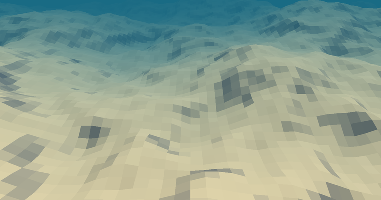
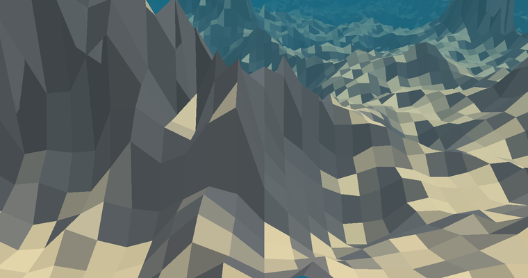
Figure 3 — The two terrain styles, rendered from the shipped parameters.
Left: Classic via Noise.cs (Sample biome — scale 45, 5 octaves,
persistance 0.5, lacunarity 2.0, height multiplier 18). Right: Canyons via
TerrainShaper.cs (Canyon biome — scale 60, 6 octaves, warp 6, ridge weight 0.6,
5 terrace steps, height multiplier 40). Both views are 40 × 27 m of seabed at the app's true
proportions (0.25 m vertex spacing, height = curve × multiplier × 0.25), shaded with the wrapped
diffuse and exp-squared medium of §8, and coloured by the same slope threshold the sand/rock
materials use. Produced by the Python port; the noise permutation differs from Unity's, so the
layout is not the app's, but every structural property is.
3.2 TerrainShaper.cs — the Canyons style
Assets/ProceduralTerrain/Scripts/TerrainShaper.cs
157 linesWORKERstaticsame signature contract as Noise.GenerateNoiseMap
Provides Style.Classic (delegates to Noise.cs, bit-identical to the original
scenes) and Style.Canyons, which layers three operators onto the same seam-safe coordinate
scheme to produce mesa plateaus and near-vertical cliff bands. Settings are a serializable nested class
so they appear in the Inspector and inside EnvironmentProfile.
The design constraint is stated in the file's header comment: the terrain must remain a single-valued
2D height field — cheap, streamable, threadable — so canyon walls must be produced by shaping the
height function itself, not by adding geometry. Three operators do this.
Operator 1 — domain warp
Ridged noise sampled on a regular lattice produces ridges that run in visibly straight, grid-aligned
lines. Domain warping fixes this by displacing the sample point itself with a second, lower-frequency
noise field before the main noise is evaluated:
Two independent offsets (warpOffsetA, warpOffsetB) are required: reusing
one offset for both components would make wx == wy, and the displacement would collapse onto
the 45° diagonal instead of covering the plane. The offsets are drawn from the same PRNG stream
immediately after the octave offsets, so warp and terrain remain locked together per seed. The warp
field's feature size is scale × warpScale — expressed as a multiple of the main noise scale
rather than an absolute number, so the warp stays proportionate when the user changes terrain scale.
Critically, the warp is computed from absolute coordinates only, so it too is chunk-independent
and the seam property survives.
Operator 2 — the ridge fold
Both a smooth and a ridged sum are accumulated in the same octave loop, from the same noise samples,
then blended. The fold is one line:
r = (1 − |2n − 1|)sharpness
2n − 1 maps Perlin's [0,1] to [−1,1]; the absolute value folds the negative half onto the
positive, so the value that used to be the noise's mid-line (n = 0.5) becomes the
maximum (r = 1) — and because the fold has a discontinuous first derivative there, the maximum is
a sharp crest rather than a smooth hilltop. Raising to sharpness narrows the crest further:
at 1.0 the ridge is a soft triangular wave; at 2.2 (the shipped value) it is a distinct knife edge; at
4+ the terrain becomes spiky needles. Figure 6 plots this directly.
A real numerical bug, and its fix.Mathf.PerlinNoise is documented as returning
[0,1] but can return values slightly outside it. If n exceeds 1, then
1 − |2n − 1| is negative, and Mathf.Pow(negative, fractional) returns
NaN. A single NaN height propagates through the mesher into a vertex position, and Unity
discards or corrupts the entire chunk mesh — a hole in the world from one sample. The guard is a
Clamp01 on the raw noise, with the reasoning recorded in-line:
// PerlinNoise may return slightly outside [0,1]; unclamped,
// the ridge fold below can go negative and Pow(neg, frac)
// yields NaN, corrupting the whole chunk mesh.
float n = Mathf.Clamp01(Mathf.PerlinNoise(sampleX, sampleY));
Both sums are then normalised deterministically — the same discipline as Global mode — and mixed:
ridgeWeight = 0 reproduces plain rolling fBm; 1 gives fully ridged mountains;
the biomes ship 0.6 (Canyon) and 0.35 (Coral Plateau).
Operator 3 — terracing
Terracing quantises height into bands, producing flat mesa tops separated by steep risers. A naïve
floor would give literal steps with vertical walls and aliased normals; instead the code
uses a gain curve on the fractional part, which keeps the function continuous and monotonic while
pushing most of the range toward the band's floor or ceiling:
static float Terrace(float h, int steps, float sharpness)
{
float t = h * steps;
float band = Mathf.Floor(t);
float f = t - band;
// Gain curve: pushes f toward 0 or 1, keeping f(0)=0, f(0.5)=0.5, f(1)=1.
float p = Mathf.Pow(f, sharpness);
f = p / (p + Mathf.Pow(1f - f, sharpness));
return (band + f) / steps;
}
The three fixed points f(0)=0, f(½)=½, f(1)=1 matter: they
guarantee the curve is continuous across band boundaries, so no crack or normal discontinuity can
appear at a band edge no matter how high sharpness goes. The result is blended with the
unterraced height by terraceStrength, so the effect can be dialled from absent to full
without ever leaving the valid range.
Because the operator is monotonic it also cannot invert terrain or create overhangs — it is a
reparameterisation of height, not a displacement. That is what makes it safe to expose to users at all.
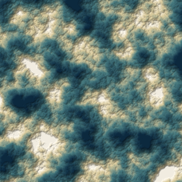
(a) fBm only
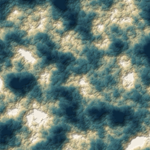
(b) + domain warp
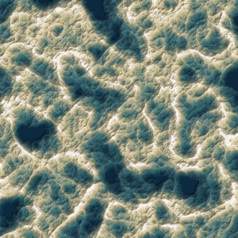
(c) + ridge fold
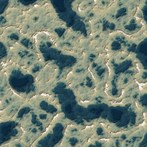
(d) + terracing
Figure 4 — Operator ablation for the Canyons style (75 × 75 m of height field,
hypsometric ramp plus shaded relief; identical seed and octave parameters throughout).
Top-left: plain fBm — isotropic blobs, no directional structure.
Top-right: + domain warp — the same features, displaced and meandered along the warp field's
flow. At the shipped warpStrength of 6 against a noise scale of 60 the effect is
deliberately subtle: it removes the grid-aligned regularity that ridged noise would otherwise
expose in the next panel, rather than restructuring the field.
Bottom-left: + ridge fold (weight 0.6, sharpness 2.4) — a connected network of sharp crests
appears where the noise mid-line runs; basins become closed depressions.
Bottom-right: + terracing (5 steps, sharpness 4, strength 0.65) — crest flanks collapse into
discrete benches and the basin floors flatten, giving the mesa-and-cliff-band reading. Plan view is
used deliberately: all three operators act on the height field, and banding and crest topology are
far more legible from above than in a perspective render.
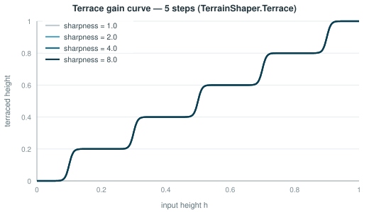
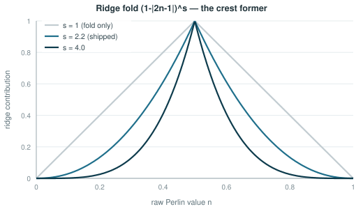
Figures 5 and 6 — The two shaping functions, plotted from the shipped code.Left: the terrace gain curve at 5 steps. At sharpness 1 the mapping is the identity (no
terracing); as sharpness rises the staircase sharpens while remaining continuous and monotonic, and
the three fixed points per band are visible as the crossing points. Right: the ridge fold
(1−|2n−1|)s. The cusp at n = 0.5 is the crest former; raising s
narrows the crest and lowers the flanks, which is why high sharpness reads as knife-edge ridges.
3.3 BiomeStyles.cs — the locked height remap
Assets/ProceduralTerrain/CreateEnv/BiomeStyles.cs
54 linesMAINstaticnamespace CreateEnv
Holds the half of a biome that users may select but not edit: the height-remap
AnimationCurve and the base TerrainShaper.Settings. Both are constructed in
code, so there are no asset references to break and no serialized curve for a user to drag into an
invalid shape.
The normalised height from Stage 1 is not used directly as elevation. It is first passed through a
remap curve, evaluated per vertex inside MeshGenerator:
y = curve(h) × meshHeightMultiplier × Scale
The curve is what converts a statistical distribution into a landform. Perlin sums are approximately
Gaussian and cluster around the middle of their range; feeding that straight into elevation produces
uniformly bumpy ground with no flat areas and no distinct highlands. The two shipped curves shape that
distribution differently:
Style
Keyframes (time, value, inTangent, outTangent)
Landform effect
Classic
(0, 0, 0, 0.6) (0.5, 0.45, 1, 1) (1, 1, 1.2, 0)
Near-linear with soft ends — gentle rolling dunes, relief distributed evenly.
Flat low shelf up to h≈0.45, then a steep 0.25→0.8 climb over a narrow band, then a flat top.
Compresses mid-heights into cliffs and expands the extremes into flat basins and mesas.
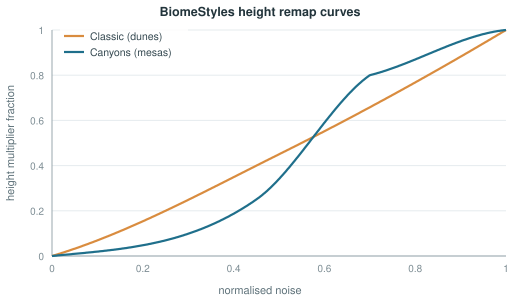
Figure 7 — The two height-remap curves, evaluated with Unity's cubic-Hermite
interpolation from the exact keyframes above. The Canyons curve's steep central segment is the cliff
former: a small change in noise value maps to a large change in elevation there, while the flat
segments at either end produce the basin floors and mesa tops. Note both curves are monotonic and
stay within [0,1].
Why the curve is not user-editable. A non-monotonic curve would map two different noise values
to the same elevation and, worse, could invert a region — the visual mesh and the collider are built
from the same curve so they would stay consistent, but a curve leaving [0,1] would break invariant I-3
(peaks below the water surface), which is derived from meshHeightMultiplier alone. Locking
the curve per style means I-3 can be checked with a single multiplication instead of sampling a
user-supplied function. The comment in the file states the intent directly: "Keeping the curve out of
user hands is what prevents inverted/NaN terrain."
BuildShaper(profile) completes the pattern: for Classic it returns a settings object with
only style set, deliberately ignoring every canyon slider in the profile (they are also
hidden in the UI), so a profile carrying stale canyon values from a previous edit cannot leak into a
dunes biome.
4 Stage 2 — Meshing
Stage 2 converts a 35 × 35 height array into triangles. It runs on a worker thread, produces a plain
data object, and does exactly three non-obvious things: it computes normals from samples it does not
mesh, it decimates by a stride constrained to divide 32, and it hangs a hidden curtain off every chunk
edge.
4.1 MeshGenerator.cs
Assets/ProceduralTerrain/Scripts/MeshGenerator.cs
163 linesWORKERstaticreturns MeshData (POD)
GenerateTerrainMesh(borderedHeightMap, heightMultiplier, heightCurve, levelOfDetail).
Evaluates the remap curve over the whole bordered array, emits a decimated vertex grid with
central-difference normals and LOD-stable UVs, then appends the skirt.
Thread safety of the height curve
The first executable line of the function is a defect fix that is easy to miss and produces
non-deterministic corruption when absent:
// AnimationCurve is not thread-safe; copy keys before sampling off-thread.
AnimationCurve heightCurve = new AnimationCurve(_heightCurve.keys);
AnimationCurve.Evaluate caches the last-used keyframe segment inside the curve object to
accelerate sequential lookups. Two worker threads evaluating the same curve instance race on that
cache and can each read a segment index the other just changed, producing values interpolated from the
wrong keyframes — wrong heights, intermittently, on some chunks only, and never reproducible in the
editor where only one chunk builds at a time. Copying the keyframes gives each invocation a private
curve.
A LOD-2 chunk carries 7% of the vertices of a LOD-0 chunk, which is where the streaming budget comes
from: the three view-distance presets place only the innermost ring at LOD 0.
4.2 Bordered normals — seamless lighting without stitching
Stage 1 generates mapChunkSize + 2 = 35 samples per side, but only the inner 33 become
vertices. The extra ring exists solely so that a vertex on the chunk's edge has neighbours on
all four sides when its normal is computed:
int bx = x + 1, by = y + 1; // +1 skips into the bordered array// Central-difference normal (map's y axis points along -Z).
float dX = heights[bx + 1, by] - heights[bx - 1, by];
float dY = heights[bx, by + 1] - heights[bx, by - 1];
Vector3 normal = new Vector3(-dX * 0.5f, 1f, dY * 0.5f);
meshData.Normals[vertexIndex] = normal.normalized;
Those border samples are generated by the same seam-safe coordinate scheme as the neighbouring chunk's
interior samples, so they are bit-identical to it. Both chunks therefore compute the same normal
for the vertices they share, and the lighting runs continuously across the border with no welding, no
neighbour lookups at runtime, and no Mesh.RecalculateNormals() — which would be both
main-thread-bound and unable to see across the chunk boundary anyway.
Figure 8 — The one-sample border ring and why it exists. The ring is generated but
never meshed; its only purpose is to supply the fourth neighbour to the central-difference normal of
each edge vertex. Combined with the bit-identical coordinate scheme of §3.1, this makes normals agree
exactly across chunk borders — the difference between a visible grid of seams and a continuous
seabed.
LOD-stable UVs
meshData.UVs[vertexIndex] = new Vector2(x / (float)(meshSize - 1),
y / (float)(meshSize - 1));
UVs are normalised to [0,1] across the chunk regardless of LOD, so a chunk's texture mapping does not
shift when it swaps resolution. In practice the terrain shader ignores these UVs and derives its own
from world position (§8.3) precisely so that tiling is continuous across chunks; the UVs remain
meaningful for the editor preview path and for any material that wants per-chunk parameterisation.
4.3 LOD skirts — hiding cracks in O(1)
When two adjacent chunks render at different LODs, the coarser chunk's edge has fewer vertices than the
finer one's. The shared edge is then geometrically a different polyline on each side, and the mismatch
opens T-junction cracks — thin gaps through which the background is visible, made worse by the fact that
they appear and disappear as the viewer moves.
The two standard solutions are edge stitching (generate transition geometry per LOD pair — correct but
combinatorial) and geomorphing (interpolate vertex heights between levels — smooth but requires both
levels resident). This codebase uses a third, cheaper option: accept the crack and make it invisible by
putting terrain behind it.
// Taller terrain (canyon biomes) opens taller LOD seams on cliff edges,
// so the hidden curtain grows with the height multiplier.
float skirtDepth = Mathf.Max(1.5f, heightMultiplier * 0.25f);
AddSkirt(meshData, verticesPerLine, skirtDepth);
Every border vertex gets a partner directly below it, and the two rings are connected by a quad strip —
a vertical curtain hanging off the chunk's perimeter. Looking through a crack, the eye sees the
neighbouring chunk's curtain rather than the skybox. The depth scales with
heightMultiplier because a taller terrain has steeper edges and therefore larger vertical
mismatches between LODs; the constant 1.5 floor keeps flat biomes covered.
The border must be walked in a consistent rotational order for the curtain's triangles to face outward. BorderLoopIndex does this by mapping a single loop parameter k onto the four sides:
static int BorderLoopIndex(int k, int verticesPerLine)
{
int side = k / (verticesPerLine - 1);
int j = k % (verticesPerLine - 1);
int last = verticesPerLine - 1;
switch (side) {
case 0: gx = j; gy = 0; break; // north (+Z edge)
case 1: gx = last; gy = j; break; // east (+X edge)
case 2: gx = last - j; gy = last; break; // south (-Z edge)
default: gx = 0; gy = last - j; break; // west (-X edge)
}
return gy * verticesPerLine + gx;
}
Note last − j on the south and west sides: this reverses those two runs so the loop
traverses the perimeter clockwise as seen from above, continuously, without duplicating corners. The
cost is 4(V−1) extra vertices and the same number of quads — for LOD 0, 128 vertices on top
of 1 089, about 12%. Constant in the number of LOD levels, with no dependence on which LOD the
neighbour happens to be using.
Figure 9 — LOD crack mitigation by hidden skirts, drawn in cross-section through a
chunk boundary. Stitching would eliminate the gap but needs geometry per LOD pair; the skirt is
constant-cost and LOD-agnostic. The visual result is equivalent at grazing angles, which is the only
way the seam is ever seen.
4.4 MapData.cs and MeshData
Assets/ProceduralTerrain/Scripts/MapData.cs
28 linesWORKERstruct
MapData is a readonly struct wrapping the height array — deliberately minimal so it can
cross the thread boundary without synchronisation concerns. Its documentation records a removal:
"colourMap has been removed; terrain colouring is now handled entirely by the Material." The
original design baked a per-chunk vertex-colour texture; that cost a texture allocation and upload per
chunk and has been replaced by the procedural shaders of §8. TerrainType (name, height
threshold, colour) survives for the editor preview only.
MeshData (declared at the foot of MeshGenerator.cs) is the matching container
for geometry: four parallel arrays sized exactly for the grid plus skirt, an append-only
AddTriangle, and a single main-thread method:
// Main thread only.
public Mesh CreateMesh()
{
Mesh mesh = new Mesh { vertices = Vertices, triangles = Triangles,
uv = UVs, normals = Normals };
return mesh;
}
The array sizes encode the skirt arithmetic and are worth checking against §4.3:
gridVerts + 4(meshWidth − 1) vertices, and
(w−1)(h−1)·6 + skirtVerts·6 triangle indices. Pre-sizing rather than using
List<T> avoids reallocation during generation, which matters because this runs
concurrently on several threads for several chunks.
5 Stage 3 — Streaming, Threading and LOD
Stage 3 is the only part of the subsystem that runs every frame. It decides which chunks should exist,
at what resolution, which of them needs a physics collider, when to hand work to a thread, and when to
destroy things. Two files: one is the concurrency boundary, the other is the streaming policy.
5.1 MapGenerator.cs — the concurrency boundary
Assets/ProceduralTerrain/Scripts/MapGenerator.cs
200 linesMAINdispatches WORKERMonoBehaviour
Owns the terrain parameters, the material, the request API and the two result queues. Also hosts the
editor preview path and ApplyProfile, the single entry point through which the
configuration layer writes terrain shape.
The request API
public void RequestMapData(Vector2 centre, Action<MapData> callback)
{
// ThreadPool avoids one OS thread per chunk.
ThreadPool.QueueUserWorkItem(_ => MapDataThread(centre, callback));
}
The comment marks a deliberate departure from the well-known tutorial lineage this code started from,
which used new Thread(...) per request. On a phone, creating an OS thread per chunk during
fast movement produces dozens of simultaneous threads, each with its own stack, thrashing a small number
of cores. The ThreadPool bounds concurrency automatically and reuses threads.
Results return through two queues guarded by their own lock objects and drained on the main thread:
Two observations for anyone extending this. First, the queues are drained to empty every frame
with no budget — a burst of completions produces a burst of main-thread work (mesh upload, collider
bake). A per-frame cap is the obvious first optimisation if profiling shows hitches during fast
movement, and it is the kind of change §12's measurements would justify. Second, callbacks are invoked
while holding the queue lock. Since a callback can call
RequestMeshData — which locks the other queue — this is safe only because the two
queues are always locked in a consistent order and never nested in the reverse direction. It works, but
it is a constraint a future refactor must preserve.
Three of the ten assignments do not come from the profile at all: the normalisation mode is asserted,
and the curve and shaper preset are rebuilt from the locked style tables. The file's comment explains
the reasoning — "a user can never supply a curve/shaper combination that produces NaN or inverted
terrain."
Note centre + offset: the chunk's world position and the profile's global offset are summed
into one coordinate, and mapChunkSize + 2 requests the bordered array of §4.2. The
Classic branch calls the original file unchanged, which is what makes the claim
"pre-existing scenes are bit-identical" checkable.
5.1.1 The editor preview path
Three small files exist only to support in-editor authoring and are never used at runtime.
DrawMapInEditor generates a single chunk and renders it as a noise texture, a region-coloured
texture, or a mesh.
File
LOC
Purpose
MapDisplay.cs
27
Applies a texture to a quad's renderer, or a mesh + material to a preview object. Two DrawMesh overloads — the texture one is legacy, the material one matches the runtime path.
TextureGenerator.cs
33
TextureFromHeightMap (grayscale lerp) and TextureFromColourMap (point-filtered, clamped).
MapData.cs
28
Supplies TerrainType, the named height/colour band used by BuildColourMap.
BuildColourMap indexes with heightMap[x + 1, y + 1] — the same
+1 offset as the mesher, skipping the normals border. It is worth noting that the runtime
path produces no colour map at all; terrain colour comes entirely from the procedural shaders.
This is a meaningful memory saving (no per-chunk texture) and is why MapData carries only
a height array.
Maintains a dictionary of live chunks keyed by integer grid coordinate; each frame, if the viewer has
moved far enough, recomputes the visible set, updates each visible chunk's LOD, drives decorators, and
destroys chunks beyond the cull radius.
Scale
0.25 — world metres per chunk-space unit
ViewerMoveThreshold
0.5 chunk units (0.125 m) — below this, no re-evaluation
CullDistanceMultiplier
1.5 — destroy beyond 1.5 × max view distance
_chunkSize
mapChunkSize − 1 = 32 (segments, not vertices)
_chunksVisibleInViewDst
round(MaxViewDst / 32) — grid radius of the visible square
autoStart exists so this can be driven two ways. Left true, streaming begins in
Start() exactly as the original scenes did. The configuration layer sets it
false, applies the profile, then calls Initialize() itself — guaranteeing no
chunk is ever generated from default parameters. The _initialized latch makes the call
order-insensitive and safe to repeat.
The visible-set update
int coordX = Mathf.RoundToInt(ViewerPosition.x / _chunkSize);
int coordY = Mathf.RoundToInt(ViewerPosition.y / _chunkSize);
for (int yOff = -_chunksVisibleInViewDst; yOff <= _chunksVisibleInViewDst; yOff++)
for (int xOff = -_chunksVisibleInViewDst; xOff <= _chunksVisibleInViewDst; xOff++)
{
var coord = new Vector2(coordX + xOff, coordY + yOff);
if (_chunkDictionary.TryGetValue(coord, out TerrainChunk existing))
existing.UpdateTerrainChunk();
else
_chunkDictionary.Add(coord, new TerrainChunk(coord, _chunkSize, detailLevels,
transform, _mapGenerator.terrainMaterial));
}
A square scan, then a per-chunk distance test — the corners of the square fall outside the circular view
distance and are hidden by UpdateTerrainChunk rather than skipped by the loop. At the Far
preset the radius is 8, so 289 chunk slots are examined per update; the work per already-existing chunk
is a bounds distance and a few comparisons.
Figure 10 — Chunk grid, LOD rings and the streaming presets. Each grid cell is one
8 m chunk. The scan is a square in grid coordinates; visibility and LOD are decided by continuous
distance, so corner chunks inside the square but outside the reach are simply hidden. Only the innermost
ring carries a physics collider, which is what makes the collider budget independent of view
distance.
LOD selection and the collider rule
int lodIndex = 0;
for (int i = 0; i < _detailLevels.Length - 1; i++) {
if (viewerDst > _detailLevels[i].visibleDstThreshold) lodIndex = i + 1;
else break;
}
if (lodIndex != _previousLODIndex) {
LODMesh lodMesh = _lodMeshes[lodIndex];
if (lodMesh.HasMesh) {
_previousLODIndex = lodIndex;
_meshFilter.mesh = lodMesh.Mesh;
if (lodIndex == 0) {
if (_meshCollider == null)
_meshCollider = _meshObject.AddComponent<MeshCollider>();
_meshCollider.sharedMesh = lodMesh.Mesh;
_meshCollider.enabled = true;
}
else if (_meshCollider != null)
_meshCollider.enabled = false;
}
else if (!lodMesh.HasRequestedMesh)
lodMesh.RequestMesh(_mapData);
}
Three design decisions are visible in this fragment:
Meshes are requested lazily and cached per level. Each LODMesh requests its
geometry the first time that level is needed and keeps it for the chunk's lifetime, so moving back
and forth across a threshold does not re-generate.
The chunk keeps its previous mesh until the new one arrives._previousLODIndex
is only updated inside the HasMesh branch, so a chunk never blanks while waiting on a
worker thread — it renders the old resolution for a few frames instead.
The collider is created once and thereafter only enabled or disabled. Adding a
MeshCollider triggers a physics bake, which is the expensive operation; toggling
enabled is cheap. A chunk that has ever been at LOD 0 retains its baked collider.
Culling and the late-callback guard
foreach (var pair in _chunkDictionary)
if (pair.Value.SqrDistanceFromViewer() > _sqrCullDistance)
_chunksToDestroy.Add(pair.Key);
Hidden chunks are kept until 1.5 × the view distance, so a viewer oscillating around the visibility
boundary re-shows an existing chunk instead of rebuilding it. Squared distances are compared throughout
to avoid square roots, and the destroy list is a reused member field rather than a fresh allocation —
this loop runs on every threshold crossing.
Because a chunk can be destroyed while worker threads still hold callbacks referring to it, the chunk
carries an explicit guard:
bool _isDestroyed; // guard against late thread callbacks after Destroy()
public void UpdateTerrainChunk()
{
if (_isDestroyed) return;
...
}
Without it, a returning mesh callback would assign to a destroyed MeshFilter and Unity would
raise a null-reference or, worse, resurrect a partially-destroyed object. SetVisible carries
the same guard.
Decorator collection — three layers of fallback
ChunkDecorator[] CollectDecorators()
{
if (detailScatter == null) detailScatter = FindFirstObjectByType<TerrainDetailScatter>();
var list = new List<ChunkDecorator>();
if (detailScatter != null) list.Add(detailScatter);
if (extraDecorators != null)
foreach (var d in extraDecorators)
if (d != null && !list.Contains(d)) list.Add(d);
// Fallback: catch any other decorators (feature scatter, etc.) left unwired.
foreach (var d in FindObjectsByType<ChunkDecorator>(FindObjectsSortMode.None))
if (d != null && !list.Contains(d)) list.Add(d);
return list.ToArray();
}
The dedicated detailScatter slot is legacy; extraDecorators is the general
array; and the final scene-wide sweep catches anything the Inspector lost. The in-line justification is
practical rather than architectural — "Unity can lose it when a component's base class changes on
reimport" — and it is the reason a dropped reference degrades into a still-populated world rather
than a silently empty one.
5.2.1 Prop spawning and hysteresis
UpdateDetails is where Stage 3 hands control to Stage 4. Two conditions must hold before a
chunk is populated: the viewer must be inside the decorator's placement distance, and the chunk's
LOD-0 collider must exist and be enabled — because population works by raycasting downward onto that
collider (§7.2).
float spawnDst = decorator.placementDistance;
float despawnDst = spawnDst + Mathf.Max(0.5f, decorator.placementHysteresis);
if (!_detailsBuilt[i]) {
if (worldDst <= spawnDst && _meshCollider != null && _meshCollider.enabled) {
_detailsBuilt[i] = true; // latch even if the chunk is bare
...
_detailRoots[i] = decorator.PopulateChunk(...);
}
}
else if (worldDst > despawnDst) {
if (_detailRoots[i] != null) { Object.Destroy(_detailRoots[i]); _detailRoots[i] = null; }
_detailsBuilt[i] = false;
}
The _detailsBuilt flag is set before the populate call and independently of its
result. That is the "latch even if the chunk is bare" comment: a chunk where every candidate was
rejected by the slope or mask filters returns null, and without the latch the system would
retry the whole rejection-heavy pass every single frame the viewer stayed nearby.
The spawn and despawn distances differ by placementHysteresis (default 4 m against a 16 m
placement distance). With a single threshold, a viewer hovering at exactly that distance would
build and destroy a full reef every frame.
Figure 11 — Spawn/despawn hysteresis for chunk population. The asymmetric thresholds
turn a boundary that would otherwise oscillate every frame into a stable band. Because population is a
pure function of the chunk coordinate, destroying props costs nothing in fidelity — they return
identically.
6 AR Integration
An infinite procedural ocean and a room-scale AR session make contradictory assumptions. The terrain
streams around a viewer in an unbounded world-space grid; AR Foundation supplies a tracked, drifting
coordinate frame whose origin is wherever the session started, and a floor plane discovered at an
arbitrary height. Reconciling them takes one small file and three targeted patches.
The complete AR coupling. Its own summary is explicit about scope: "It has NO dependency on the app's
goal / tutorial / layer / educational systems — it just anchors the terrain prefab to wherever you tap.
That's the whole AR scan part, nothing else."
Figure 12 — AR placement flow. A one-shot interaction: scan, tap, anchor,
instantiate, stop scanning. Anchoring to the ARPlane rather than to the session origin is
what keeps the ocean fixed to the physical floor as tracking refines its estimate of that floor's
position.
Pose pose = _hits[0].pose;
// Anchor to the detected plane so the terrain stays fixed in the real world.
Transform parent = transform;
if (_anchors != null && _planes != null) {
ARPlane plane = _planes.GetPlane(_hits[0].trackableId);
if (plane != null) {
ARAnchor anchor = _anchors.AttachAnchor(plane, pose);
if (anchor != null) parent = anchor.transform;
}
}
_placed = Instantiate(terrainPrefab, pose.position, pose.rotation, parent);
if (stopScanningAfterPlace && _planes != null) {
_planes.enabled = false;
foreach (var p in _planes.trackables) p.gameObject.SetActive(false);
}
Every AR-Foundation call is null-guarded and degrades to parenting under the XR Origin, so the component
still functions in a scene without an anchor manager (and in the Editor). Turning off the plane manager
and hiding the trackables after placement removes the scanning visuals, which would otherwise be visible
as translucent grids intersecting the seabed.
6.2 The three AR adaptation patches
The streaming system was written for a standalone scene with a hand-wired viewer at world origin. Three
changes make it work as a runtime-instantiated prefab under a drifting AR anchor. They are small but each
one is load-bearing.
Patch 1 — floor height from the anchor, X/Z from the world
// AR fix: keep X/Z in world space (terrain streams around the camera) but lift the
// seabed to the parent/anchor floor height instead of pinning it to world Y = 0.
_meshObject.transform.position = new Vector3(_position.x * Scale,
parent != null ? parent.position.y : 0f,
_position.y * Scale);
This is the hybrid that makes the whole thing work. Horizontal position stays in the unbounded streaming
grid, so the infinite-world logic is untouched. Vertical position is taken from the anchor, so the
seabed sits on the physical floor the user tapped rather than at the AR session's arbitrary
y = 0. Note that the chunk is also parented to the anchor, so it inherits any subsequent
tracking correction — the height read here is the initial placement, and the parent transform handles
drift thereafter.
Patch 2 — viewer fallback to the active camera
// AR fallback: when no viewer is wired in the Inspector (e.g. spawned as a
// prefab into the Marine AR scene), stream around the active camera instead.
if (viewer == null) {
if (Camera.main == null) return;
viewer = Camera.main.transform;
}
A prefab instantiated at runtime cannot hold a serialized reference to a camera that exists in a
different scene. The same fallback appears in WaterSurface.Update and in
UnderwaterEnvironment.Apply — in the latter guarded by
Application.isPlaying so that the [ExecuteAlways] component does not hijack
the Scene-view camera while editing.
Patch 3 — deferred initialisation
Covered in §5.2: autoStart = false plus an explicit Initialize() from the
loader. In an AR flow the prefab is instantiated mid-session, so Start() on
MapGenerator and EndlessTerrain may run in either order within the same frame;
the latch and the explicit call remove the ordering dependency.
6.3 Prefab topology
Four environment prefabs exist under Assets/ProceduralTerrain/Prefabs/. Each is a complete,
self-contained environment: drop one under an anchor and it runs.
Prefab
Contents and role
ProceduralTerrainEnvironment
Coral Shallows — the original bright turquoise reef dunes. This is the prefab EndlessTerrainPlacer spawns by default.
KelpForestEnvironment
Emerald water, tall swaying kelp groves, warm stone. Uses ProceduralFeatureScatter for kelp and rock.
CoralCanyonsEnvironment
Canyons terrain style plus arches, grottos, sea fans and anemone patches. The heaviest content configuration.
ConfigurableTerrainEnvironment
Carries EnvironmentLoader; the prefab used by Custom Create, where all parameters come from a profile at runtime.
Each prefab contains the same component skeleton — MapGenerator,
EndlessTerrain, UnderwaterEnvironment, WaterSurface,
MarineSnow, one or more decorators — differing only in serialized values and assigned
materials. The three built-in biomes therefore share every line of code; what distinguishes them is
data. §9.5 makes the same point about the built-in profiles, which are defined in C# rather than as
scenes for exactly this reason.
7 Stage 4 — Deterministic Population
Stage 4 is what turns terrain into a habitat. It seats reef communities, kelp stands, boulders, spires,
swim-through arches and hollow grottos onto the streamed mesh. It is also the largest part of the
subsystem — 1 696 lines across four files — and the part with the most content-specific reasoning in it,
because every placement rule is trying to encode something about how benthic communities actually
distribute.
7.1 ChunkDecorator.cs — the contract and the determinism claim
public abstract GameObject PopulateChunk(int chunkX, int chunkZ, Vector3 worldCentre,
float worldHalfSize, Collider surface,
Transform parent);
One method, plus two tuning fields (placementDistance,
placementHysteresis). The contract's requirements are stated in the class comment and are
what make the system work: implementations return a single root GameObject holding
everything they spawned (so the streamer can destroy it with one call), and they must be
deterministic per chunk so the world rebuilds identically on return.
Both implementations satisfy determinism the same way — a spatial hash of the chunk coordinate:
static int HashChunk(int x, int z, int seed)
{
unchecked {
int h = seed;
h = h * 73856093 ^ x * 19349663 ^ z * 83492791;
return h;
}
}
var rng = new System.Random(HashChunk(chunkX, chunkZ, seed)); // deterministic per chunk
The three multipliers are the well-known large primes from Teschner et al.'s spatial hashing, chosen so
that nearby coordinates scatter to unrelated hash values — adjacent chunks must not receive correlated
random streams, or reefs would visibly align to the chunk grid. unchecked permits the
intended 32-bit overflow.
Why this is a contribution and not just a convenience (claim C4). Because placement is a pure
function of (chunkX, chunkZ, seed), the world has three properties simultaneously:
Unbounded extent — any chunk coordinate is valid, so the ocean has no edge.
O(visible) memory — nothing outside the cull radius exists in memory; there is no growing
structure of "chunks I have visited".
Zero persistence — no save file, no serialization, no migration. A learner who swims away
from a reef and comes back finds the identical reef, because it was recomputed rather than
recalled.
The educational corollary is reproducibility: a teacher and a student who load the same profile see the
same world, and a described observation ("the sea fan on the ridge north of the arch") remains valid.
Counts are drawn with an unbiased integer sampler shared by both scatterers:
// Expected-value count: floor + a fractional chance for the remainder.
static int PoissonCount(float mean, System.Random rng)
{
int n = Mathf.FloorToInt(mean);
if ((float)rng.NextDouble() < (mean - n)) n++;
return n;
}
This gives E[n] = mean exactly, which matters because densities are the user-facing knob: a
density of 1.5 mounds per chunk must average 1.5, not round to 1 (a 33% content loss) or 2.
Places prefab models (imported coral and plant meshes) according to an array of
ScatterRules. Each rule works in one of two modes: Cluster packs members into a domed
mound (reefs, dense seaweed patches) or Scattered drops members individually across the chunk
(lone corals, single plants).
The rule structure
A ScatterRule is 25 serialized fields grouped into seven Inspector sections. The grouping is
informative because it maps onto the questions the placement algorithm asks:
Group
Fields
Question answered
Prefabs
members[], paletteSize
What models may appear, and how many distinct species dominate one mound
Density
densityPerChunk, respectGardenMask
How many, and whether they cluster into lush zones
Every placement decision starts from a downward raycast against the chunk's own collider:
static bool SampleGround(Collider surface, float x, float z, float rayTop,
out Vector3 point, out Vector3 normal)
{
var ray = new Ray(new Vector3(x, rayTop, z), Vector3.down);
if (surface.Raycast(ray, out RaycastHit hit, rayTop * 2f + 100f)) {
point = hit.point; normal = hit.normal; return true;
}
point = Vector3.zero; normal = Vector3.up; return false;
}
Collider.Raycast tests one specific collider rather than the whole scene, so props cannot
accidentally seat on each other or on a creature, and the cost does not grow with scene complexity.
rayTop is worldCentre.y + 50, well above any terrain the height invariant
permits.
The constraint that makes this fragile. Chunk population must run while the chunk's
GameObject is active. A raycast against a collider on an inactive object returns
nothing, so every candidate silently fails and the chunk comes out bare — with no error. This is why
§5.2.1 gates population on _meshCollider.enabled, and why anything that reorders visibility
and population must preserve that order.
Mode A — Scattered
A uniform point in the chunk, then a filter chain. Any rejection abandons that candidate entirely:
float x = worldCentre.x + Rand11(rng) * worldHalfSize;
float z = worldCentre.z + Rand11(rng) * worldHalfSize;
if (rule.respectGardenMask && (float)rng.NextDouble() > GardenFactor(x, z)) return 0;
if (!SampleGround(surface, x, z, rayTop, out Vector3 p, out Vector3 nrm)) return 0;
float slope = Vector3.Angle(nrm, Vector3.up);
if (slope < rule.minSlope || slope > rule.maxSlope) return 0;
if (p.y < rule.heightRange.x || p.y > rule.heightRange.y) return 0;
if ((float)rng.NextDouble() > EdgeAcceptance(surface, p, nrm, rayTop, rule)) return 0;
Note the filters are probabilistic where they are ecological (mask, edge affinity) and
hard where they are physical (slope, height). A mask value of 0.6 means 60% of candidates
survive, giving soft-edged lush zones rather than a visible boundary.
A low-frequency world-space noise field (default gardenScale = 0.05, i.e. features about
20 m across) thresholded and smoothstepped. Without it, a density of 3 corals per chunk produces 3 corals
in every chunk — a uniform carpet that reads as procedural. With it, the same average produces
dense gardens separated by open sand, which is both how reefs look and a much stronger cue that the
world has structure. Because the field is sampled in world space, it is continuous across chunk borders
and independent of the chunk grid.
Mode B — Cluster: Vogel packing
A mound is built by placing members on a sunflower spiral. Two lines do the geometry, and each has a
reason:
√t — sampling radius uniformly would concentrate members at the centre, because
area grows as r². The square root makes areal density uniform across the disc.
Golden angle — successive members are separated by 137.5°, the most irrational rotation
available. No two members share a radial line and no lattice artefact appears at any count, which
is precisely why phyllotaxis converges on this angle. A fixed angle like 90° would produce four
visible arms.
angleJitter — a per-mound random phase, so adjacent mounds are not rotationally
identical.
Then the mound is domed and given a size hierarchy:
The lift is a parabola — maximum at the centre, zero at the rim — so the patch reads as a reef head
rather than a flat disc, and the centre members are up to centerScaleBoost (1.4) times
larger. Real coral heads grow this way: the oldest, largest colony is central and recruits fringe it.
The mound centre is also inset so it cannot hang off the chunk:
inset = worldHalfSize − moundRadius, which keeps the whole footprint on the collider being
raycast.
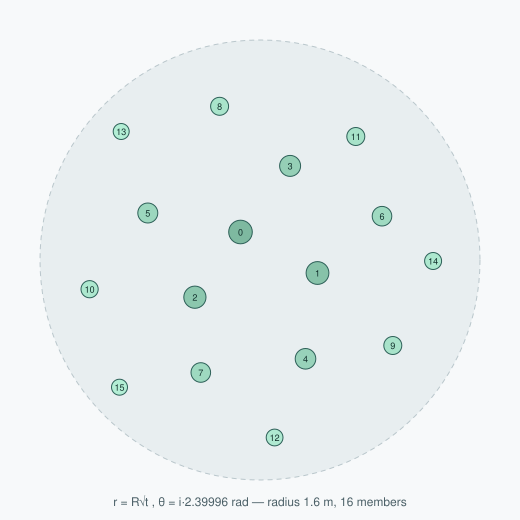
Figure 13 — Vogel (sunflower) mound packing, generated by the shipped formula.
Sixteen members in a 1.6 m mound; numbers are placement order. Marker size encodes the combined
centerScaleBoost and dome lift, so the size hierarchy is visible: central members are
larger and raised, rim members smaller and at ground level. Note that no two members lie on a common
radius and there is no visible lattice — the property the golden angle buys.
Micro-habitat placement by local curvature
This is the most biologically motivated rule in the file, and it is optional per rule because it costs
four extra raycasts per candidate.
Vector3 t = Vector3.Cross(n, Vector3.up);
if (t.sqrMagnitude < 1e-6f) t = Vector3.right; // degenerate on flat ground
t.Normalize();
Vector3 b = Vector3.Cross(n, t).normalized;
// four probes: ±t and ±b at edgeProbeRadius
float mean = sum / hits;
float convexity = Mathf.Clamp((p.y - mean) / probe, -1f, 1f);
return Mathf.Clamp01(0.5f + 0.5f * convexity * rule.edgeAffinity);
The four probes estimate the mean surrounding height; the candidate's height relative to that mean,
normalised by the probe radius, is a discrete curvature measure. Positive convexity means the point sits
on a bump, ridge or boulder edge; negative means a hollow or crevice mouth.
edgeAffinity
Acceptance behaviour
Ecological reading
0 (default)
1.0 everywhere
No preference; the pre-existing behaviour, zero extra cost
> 0
Favours convex points
Filter feeders — gorgonians, sea fans, sponges — colonise exposed edges and ridge tops where current delivers food
< 0
Favours concave points
Cryptic and shade-seeking species settle in hollows and crevice mouths
Size–frequency distribution
float u = (float)rng.NextDouble();
if (rule.sizeExponent > 1.001f) u = Mathf.Pow(u, rule.sizeExponent);
float targetHeight = Mathf.Lerp(rule.sizeMeters.x, rule.sizeMeters.y, u) * sizeBoost;
Raising a uniform variate to a power biases it toward zero, so sizes skew small.
sizeExponent = 1 is the uniform default; higher values produce "many small, a few mid,
occasional large", which is the shape of real benthic size distributions. The rationale is recorded in
the tooltip: "how real benthic communities are distributed."
Metric normalisation — the scale-accuracy mechanism
Imported models arrive at arbitrary scales depending on the authoring tool and export settings. For a
science-education application, a coral that is accidentally three metres tall is a content error, not a
cosmetic one. The scatterer therefore ignores the model's native scale entirely and measures it:
Bounds nb = renderers[0].bounds;
for (int i = 1; i < renderers.Length; i++) nb.Encapsulate(renderers[i].bounds);
if (nb.size.y > 0.0001f && targetHeight > 0f)
tr.localScale = Vector3.one * (targetHeight / nb.size.y);
// Re-seat using the scaled bounds so nothing floats or sinks.
Bounds b = renderers[0].bounds;
for (int i = 1; i < renderers.Length; i++) b.Encapsulate(renderers[i].bounds);
float lift = restPoint.y - b.min.y - rule.embed * b.size.y;
tr.position += Vector3.up * lift;
Two measurement passes are required, and the reason is subtle: Renderer.bounds is in world
space and reflects the current transform, so after changing localScale the bounds
must be re-read before they can be used to seat the object. The final lift puts the model's
lowest point at the ground, then sinks it by embed (default 6%) of its height so no prop
appears to hover on a slope.
So sizeMeters = (0.3, 0.8) means "between 30 and 80 cm tall in the real world", whatever the
source asset. That is a specification a marine biologist can check.
alignToNormal interpolates between standing straight up (0) and fully following the slope
(1); the shipped default of 0.2 reflects that most sessile organisms grow toward the light while being
partly influenced by their substrate. Fully aligning corals to a steep slope makes them look like they
were stuck on sideways.
Two engineering details with visible consequences
Colliders are stripped from decoration.
if (!propsBlockMovement) {
var cols = go.GetComponentsInChildren<Collider>(true);
for (int c = 0; c < cols.Length; c++) Destroy(cols[c]);
}
The tooltip records the bug this fixed: "any collider they imported with is stripped, so
swimmers/characters pass through them instead of getting wedged." With hundreds of imported models
per chunk, each carrying whatever collider its author left on it, a learner navigating a dense reef gets
trapped. Decoration is decoration.
Material unification preserves per-prop textures.
Color baseCol = Color.white; Texture albedo = null;
if (src != null) {
if (src.HasProperty(BaseColorId)) baseCol = src.GetColor(BaseColorId);
if (src.HasProperty(BaseMapId)) albedo = src.GetTexture(BaseMapId);
else if (src.HasProperty(MainTexId)) albedo = src.GetTexture(MainTexId);
}
...
if (unify) { /* every submaterial ← unifyMaterial */ }
r.GetPropertyBlock(_mpb);
if (unify && albedo != null) _mpb.SetTexture(BaseMapId, albedo);
if (tint) _mpb.SetColor(BaseColorId, linear ? final.linear : final);
r.SetPropertyBlock(_mpb);
Imported props arrive with their own shaders, which do not participate in the shared water medium of §8 —
so they look pasted on, lit differently from the terrain around them. Forcing every prop onto one
underwater material fixes the lighting but would also discard each prop's albedo map, flattening a
diverse reef to one texture. The code therefore harvests each renderer's albedo into a
MaterialPropertyBlock first, then re-applies it over the shared material. A single reused
_mpb instance serves all props. The colour tint is converted to linear space explicitly when
the project is linear, mirroring §8.1.
Bounded output
maxPropsPerChunk is checked in both loop conditions
(r < rules.Length && spawned < maxPropsPerChunk, and again per member), and
TryBuildMound receives the remaining budget so a mound is truncated rather than skipped.
This is invariant I-6 (§9.3): no combination of life pack and density sliders can exceed the ceiling. The
first populated chunk also logs a diagnostic that distinguishes the three failure modes — broken prefab
references, over-restrictive filters, or successful spawning — which is a small but real
maintainability feature in a system where "nothing appeared" has several possible causes.
The sister of TerrainDetailScatter: the same chunk hashing, Poisson counts, slope/height
filters and metric scaling, but instead of prefabs it instantiates runtime-generated meshes from a
small shared library. Adds two things the prefab scatterer does not have: a variant cache and talus.
The variant cache — flat memory in an infinite world
Mesh GetMesh(int ruleIndex, int variant)
{
if (_variantCache == null || _variantCache.Length != rules.Length)
_variantCache = new Mesh[rules.Length][];
FeatureRule rule = rules[ruleIndex];
var set = _variantCache[ruleIndex];
if (set == null || set.Length != rule.variants)
_variantCache[ruleIndex] = set = new Mesh[rule.variants];
int v = Mathf.Abs(variant) % rule.variants;
if (set[v] == null)
set[v] = ProceduralMeshLibrary.Build(rule.kind,
seed * 31 + ruleIndex * 977 + v * 7919 + (int)rule.kind * 53);
return set[v];
}
Each rule builds at most variants (≤ 8) meshes, lazily, on first use, and every instance in
the world shares them. Ten thousand boulders cost four meshes. The variant seed mixes rule index, variant
index and feature kind with distinct primes so that two rules using the same kind still get different
shapes. Keying the cache per rule rather than per kind is what allows, say, a "small boulders"
rule and a "large boulders" rule to look like different rock populations.
This is the mechanism behind claim C2's memory argument: mesh memory is O(rules × variants), independent
of how far the learner swims.
Talus — merged rubble skirts
The problem is stated in the field's tooltip: "Real boulders sit in a skirt of their own broken-off
fragments; without it the rock meets sand at a hard line, which is the 'pasted on' read."
The same √U trick as the mound gives uniform areal density in the annulus between
footprint × 0.65 and footprint × talusSpread. The inner and outer radii are
derived from the formation's actual footprint, which SpawnFeature returns
(max(size.x, size.z) × scale × 0.5) — so the rubble skirt matches however large that
particular boulder turned out.
Fragments are not instantiated individually. They are accumulated and merged:
var combined = new Mesh { name = "Talus" };
combined.indexFormat = UnityEngine.Rendering.IndexFormat.UInt32;
combined.CombineMeshes(pieces.ToArray(), true, true);
combined.RecalculateBounds();
One merged mesh per rule per chunk: an entire rubble field costs one draw call rather than one per
pebble. IndexFormat.UInt32 is set because merged rubble easily exceeds the 65 535-vertex
16-bit limit. The trade-off is that merged geometry cannot be culled or LOD-ed individually, which is
acceptable for small fragments confined to one chunk.
Swim-through colliders
if (rule.addCollider) {
var col = go.AddComponent<MeshCollider>();
col.sharedMesh = mesh; // non-convex: you can swim through arches/grottos
}
Deliberately non-convex. A convex collider would fill the arch's opening and the grotto's interior with
solid volume, making the two features that exist specifically to be entered impossible to enter.
Non-convex mesh colliders are more expensive, which is why the flag is off by default and documented as
"only worth it for big swim-through formations."
Material coherence
Material MaterialFor(FeatureRule rule)
{
if (sharedRockMaterial != null && IsRockKind(rule.kind)) return sharedRockMaterial;
return rule.material;
}
IsRockKind returns true for Boulder, Spire, Arch, Overhang and Grotto. When a shared rock
material is assigned it overrides all five, so — as the tooltip puts it — "an arch cannot end up a
different colour from the boulders around it." A per-rule override remains possible for non-rock
kinds (kelp, anemones, sea fans), which legitimately need their own shaders.
7.4 ProceduralMeshLibrary.cs — solving the overhang problem
807 linesMAINstaticno Unity dependencies beyond Mesh construction
Builds eight kinds of prop mesh at runtime from a seed: Boulder, Spire, Arch, Overhang, Grotto,
KelpPlant, GlowAnemone, SeaFan. Textureless, flat-shaded, vertex-coloured, ~1 m nominal height
(the scatterers rescale). This is the largest single file in the subsystem and the strongest candidate
for the paper's graphics contribution.
The problem
A height field is a function y = f(x, z). It is single-valued by definition, so it can represent a
cliff (arbitrarily steep) but never an overhang, an arch or a cave — the three
features that most strongly communicate "this is a real reef" and that a learner most wants to swim
into. The standard remedies are to abandon height fields for voxels with marching cubes, or to carve
signed-distance fields: both multiply memory and generation cost, and both would break the threaded
streaming design of Stages 1–3.
The choice made here is stated at the top of the file:
// This is the workaround for a 2D heightmap having no overhangs:
// the terrain stays a cheap heightfield, and true 3D features are separate
// meshes seated on top of it.
The terrain keeps every property that made it streamable, and topological complexity is delegated to a
handful of small, shared, instanced meshes. That is claim C2.
Common infrastructure
Component
Behaviour and rationale
Icosphere(subdiv)
Golden-ratio icosahedron with midpoint-cached subdivision (a Dictionary<long,int>
keyed by the packed edge pair). Chosen over a UV sphere because it has no pole singularity and
uniform triangle area — displacement noise then produces even detail everywhere.
Draft
Triangle-soup builder. Tri appends three new vertices per triangle, so
vertices are never shared. Flat shading then costs nothing: the face normal is one cross
product and is assigned to all three vertices. No smoothing groups, no normal averaging, no
seams.
Vertex colours
rgb carries a faint positional tint (1 + 0.08·fBm(v × 3.7)) so a large
rock is not one flat colour; a carries baked ambient occlusion supplied per
kind as a lambda. This is how cave interiors get cave lighting with no lights (below).
Noise
Hash → ValueNoise → Fbm / RidgedFbm, all on
an integer hash rather than UnityEngine.Random, so results are identical on every
platform and independent of global random state.
RockStyle — three properties that make rock read as rock
The file contains an unusually explicit design argument, worth quoting because it is the thesis of the
whole class:
// The old prop meshes were bodies of revolution with a little low-frequency
// noise on top — the eye recognises those instantly as "a sphere someone
// wobbled", which is exactly the artificial look. Real rock has three things
// none of that had:
//
// 1. Fracture faces – rock splits along planes, so it is covered in flat
// facets meeting at hard edges, not smooth curvature.
// 2. Bedding strata – sedimentary layers of different hardness: resistant
// bands jut out, soft bands erode back, and the underside
// of each hard band overhangs the one below it.
// 3. Detail at two scales – broad mass shape plus fine chipped surface.
1. Fracture. Random half-spaces, sized against the ellipsoid so each actually intersects it:
public Vector3 Fracture(Vector3 p)
{
if (fractures == null) return p;
for (int i = 0; i < fractures.Length; i++) {
Vector3 n = new Vector3(fractures[i].x, fractures[i].y, fractures[i].z);
float over = Vector3.Dot(p, n) - fractures[i].w;
if (over > 0f) p -= n * over; // project onto the plane
}
return p;
}
Points violating a half-space are projected onto its plane, not clipped away. Every vertex in the
violating region therefore lands exactly on one plane, collapsing a whole patch of curved surface into a
single flat facet, with a hard silhouette edge where the plane crosses the surface. Six to ten planes per
rock, each keeping 52–86% of the ellipsoid's extent along its normal, and biased away from straight down
(rng.NextDouble() * 2f - 0.6f on the y component) so bases stay seatable.
2. Bedding. Alternating hard and soft sedimentary bands with an asymmetric profile:
float h = Vector3.Dot(p, beddingUp) * strataCount;
float band = Mathf.Floor(h);
float f = h - band;
float hardness = Hash(Mathf.RoundToInt(band), 17, 3, seed) * 2f - 1f;
float lip = 0.35f + 0.65f * (1f - f); // juts most at the band's base
return lateral.normalized * (strataAmp * hardness * lip);
Each band gets a hash-derived hardness in [−1,1]: positive bands push outward (resistant), negative bands
recede (eroded). The lip term makes the push strongest at the band's base and weakest
at its top, so each hard band's underside overhangs the softer band beneath it — producing the thin
shadow line that makes stratified rock legible at a glance. The bedding plane is tilted a few degrees
(dip 0.03–0.16 at a random yaw) because, as the comment notes, dead-level layers "look like
a stack of pancakes".
3. Two-scale detail. Three superimposed displacement fields on the radius:
Broad (frequency ~1.0–1.7, amplitude 0.26–0.40) sets the mass; detail (5–8, 0.06–0.11) chips the surface;
ridged creases (2.0–3.4, 0.10–0.17) run fracture-like lines across it. The amplitudes carry a note that
they were "tuned against offline renders of the generated meshes" — weaker values let the facets
and bedding stop reading, and the rock reverts to a wobbled ball.
Two application methods exist. ShapeFromDirection(dir) treats the input as a direction on the
unit sphere and is used for closed blobs. Weather(p, outward, pivot, amount) applies the same
language to a point on an arbitrary surface — swept arch tubes, cave shells — displacing along a supplied
outward vector and fracturing relative to a pivot. Because every rock-like feature routes through one
RockStyle instance, the whole biome reads as one rock type rather than a set of unrelated
primitives.
Finally SeatBase flattens everything below a threshold and flares it outward, so a boulder
sits in the sand with a suggestion of buried talus rather than balancing on a point.
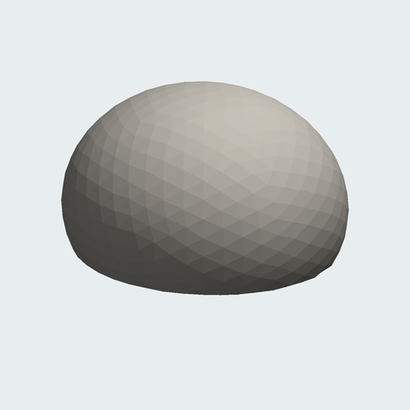
(a) ellipsoid
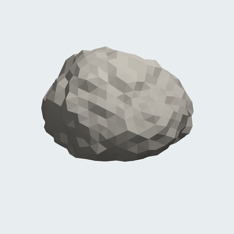
(b) + displacement
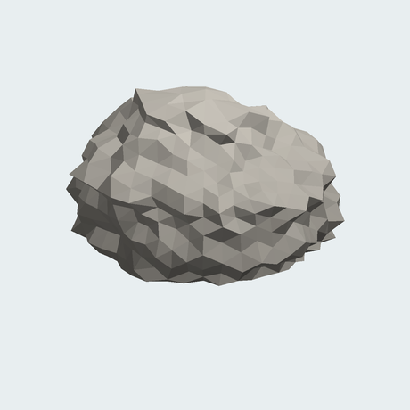
(c) + bedding
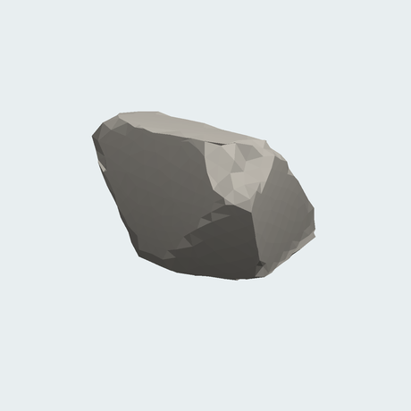
(d) + fracture
Figure 14 — RockStyle ablation, rendered from a port of the shipped code.
Same seed, same icosphere (subdivision 3, 1 280 faces), flat-shaded with baked vertex AO throughout.
(a) the non-uniform ellipsoid alone — unmistakably a squashed sphere. (b) plus the
three-scale displacement — lumpier, but still smoothly curved, the classic "wobbled ball". (c)
plus bedding strata — horizontal banding with overhanging lips appears. (d) plus fracture
half-spaces — large flat facets meeting at hard edges, and a silhouette made of straight segments
rather than arcs. Panel (d) is the shipped configuration; the difference between (b) and (d) is the
argument the class exists to make.
Per-kind construction
Kind
Construction and the specific problem it solves
Boulder
Subdivision-2 icosphere through ShapeFromDirection, then SeatBase.
AO = clamp01(0.6 + y·0.9) — darker underneath.
Spire
9 rings × 8 segments. Radius baseR·(1−t)0.72·(1 + 0.25·sin(9t + seed)) —
the exponent below 1 gives a concave taper (thick base, slender top) and the sine adds a bulge.
Centre-line lean grows as t² so the base stays vertical while the tip curves off.
Fan-capped at the top.
Arch
A tube swept along a half-circle from −0.15 to π + 0.15 rad — deliberately past horizontal so
the feet embed in sand. Thickness minor · lerp(widen, 1, sin θ): feet up to 1.5×
thicker than the crown, which is both structurally plausible and hides the sand junction.
Fractures are explicitly disabled (see below).
Overhang
A piecewise radius profile — narrow stem to t = 0.55, a smoothstepped flare to the cap at
t = 0.75, then a rounded top. The AO lambda darkens a band under the cap
(clamp01((y−0.35)/0.3) · clamp01((0.72−y)/0.2)), baking the ledge shadow that
makes a cantilever read as a cantilever.
Grotto
The fake cave — see below.
KelpPlant
3–5 blades, each a 7-segment ribbon with an S-curve at rest so blades are not rigid poles even
when still. uv.y is the root→tip parameter, consumed by the shader for both sway
weighting and the colour ramp. Smooth normals (ToSmoothMesh) because ribbons should
not facet.
GlowAnemone
Squashed icosphere (y × 0.55, and × 0.35 again below zero so it sits nearly flat) plus 8–15
three-sided tentacle pyramids. TriGlow writes a glow mask into vertex alpha: 0.1 at
the base, 1.0 at the tip, so only the tips emit.
SeaFan
Recursive branching confined near the x–y plane with a small z wobble; 2–3 children per node,
length × 0.58–0.72 and width × 0.62 per level, depth 5. Each branch quad is emitted twice with
opposite winding so the fan is visible from both sides without a two-sided shader.
Why the arch turns fractures off.
// Same rock language as the boulders (displacement + bedding), but with the
// fracture half-spaces cleared: those are sized against a solid ellipsoid and
// would slice a swept arch in half. Without this the arch reads as a smooth
// tube next to faceted boulders — a different material entirely.
var style = RockStyle.Random(rng, seed, 0.55f);
style.fractures = null;
The half-spaces are computed from the ellipsoid's extent, but an arch is a thin tube swept through a
large volume: a plane that shaves a sensible slice off a solid blob passes straight through the middle of
the arch and flattens it. The compromise keeps displacement and bedding — enough shared visual language
that the arch matches the boulders — and accepts a smoother silhouette. The comment records both the
reason and the cost, which is exactly the kind of trade-off a paper should report rather than hide.
The grotto — a cave with cave lighting and no lights
The grotto is the most interesting single construction in the file. It is a hollow, squashed dome with a
mouth, built as two concentric shells with matching holes and a bridged rim.
A lattice cell belongs to the mouth if its centre direction falls inside a cone about
mouthDir (aperture ≈ 32–40°). The same predicate is evaluated for both shells, so the
inner and outer holes coincide exactly — no offset rim, no leaking geometry. For open cells, the code
emits nothing except bridging quads on the edges that border solid cells:
if (i > 0 && !cellOpen(i - 1, j)) d.Quad(o00, o01, n01, n00);
if (i < lat - 1 && !cellOpen(i + 1, j)) d.Quad(o11, o10, n10, n11);
if (!cellOpen(i, (j - 1 + lon) % lon)) d.Quad(o10, o00, n00, n10);
if (!cellOpen(i, j1)) d.Quad(o01, o11, n11, n01);
Those four conditional quads join the outer shell to the inner shell around the opening, giving the mouth
a rocky rim of finite thickness instead of the paper-thin edge a single-shell hole would show. Solid
cells emit the outer shell facing out and the inner shell facing in (reversed winding), so the
interior is visible from inside.
inside is a 0→1 measure of shell membership (computed in the un-squashed frame so the
squash does not bias it); towardMouth brightens surfaces facing the opening, squared so the
falloff is steeper than linear. Interior vertices therefore carry alpha as low as 0.14 — near-black —
rising toward 0.5 near the mouth, while the exterior uses the ordinary height-based AO. The rock shader
multiplies lighting by this value (§8.3), so the cave is dark inside and its mouth glows, on a mobile
GPU, with no additional light sources, no shadow maps and no light probes.
Figure 15 — Grotto construction. Left: cross-section. The double shell gives the wall
thickness; bridging quads close the rim at the opening; the interior's baked vertex AO is near-black and
brightens toward the mouth. Right: the mouth is a cone test on the cell's centre direction, applied to
both shells so their holes register exactly. The result is a swimmable cave whose lighting costs
nothing at runtime.
7.5 The minimap subsystem
Three small files provide spatial orientation, which matters for a learner navigating an unfamiliar
infinite environment on a phone screen.
File
Behaviour
MinimapMarker.cs (12)
Attach to anything that should appear. OnEnable registers, OnDisable
removes — so streamed-in and streamed-out props clean up automatically with no bookkeeping in
the streamer.
MinimapRegistry.cs (17)
A static list. Deliberately host-agnostic: "the radar needs no colliders and no knowledge of
what the objects actually are."
MinimapRadar.cs (298)
Self-building screen-space radar. Two independent sources — the registry, and optional physics
overlap queries filtered by tag, so host-app creatures appear without modifying them.
The radar's design choices are worth noting because they address the density this world produces:
Depth banding. Targets are bucketed by layerHeight (2 m) into level
(●), above (▲) and below (▼) glyphs, with a
visibleLayerRange cut-off. A 2D radar in a 3D volume otherwise conflates a fish
overhead with one at your feet.
Blip clustering. Targets are hashed into screen cells of clusterCellPixels and
merged, with size growing by sizePerExtra up to densityCap. Without
this, a reef of 200 props renders as an unreadable smear.
Rim clamping. Out-of-range targets are pinned to the radar edge, conveying direction
without implying distance.
Object pooling.Text components are reused from a pool at
refreshHz (default 8 Hz) rather than per frame, and a pre-allocated
Collider[256] buffer serves the physics query — both matter because this runs on top
of the streaming budget.
8 Stage 5 — Rendering and the Water Medium
Everything in the world — sand, rock, kelp, imported coral models, bioluminescence, the surface seen from
below, suspended particulate and the backdrop itself — is rendered through one shared medium model.
That is the organising decision of Stage 5, and it is what prevents the "pasted-on" look in which each
asset is lit by its own assumptions. One C# component owns a palette and broadcasts it as shader globals;
one HLSL include implements the physics; eight shaders consume both.
8.1 UnderwaterEnvironment.cs — one palette, fifteen globals
142 linesMAIN[ExecuteAlways]writes RenderSettings, the camera, and 15 Shader.SetGlobal*
Four colours (water/fog, surface glow, deep, sun glow) plus visibility, medium, surge and encrustation
parameters. Apply() runs in OnEnable, OnValidate and every
Update — deliberately re-asserted each frame so nothing else in the app can quietly
override the fog or the camera's far plane.
What one Apply() call configures:
Target
Value
Fog
ExponentialSquared, colour = waterColor, density = fogDensity
Ambient
Trilight: sky = surface glow, equator = water, ground = deep colour, all × ambientIntensity. A vertical ambient gradient for free — objects are lit from above by the bright surface and from below by dark water.
Skybox
skyboxMaterial if assigned
Camera
clear flags (skybox or solid), background = water colour, farClipPlane = fadeEnd + cameraFarMargin
Shader globals
15 values: 4 colours, fog density, fade start/end, water level, absorb tint, surge amplitude/speed/direction, encrust A/B/amount/scale
The derived far plane is invariant I-5. Because the medium is fully opaque at fadeEnd,
geometry beyond that distance cannot contribute anything visible, so clipping just past it is free
performance — fewer chunks rasterised, and a tighter depth range.
A colour-space trap worth documenting.
// Shader globals skip Unity's auto sRGB→linear, so convert here.
bool linear = QualitySettings.activeColorSpace == ColorSpace.Linear;
Color fogCol = linear ? waterColor.linear : waterColor;
Shader.SetGlobalColor(FogColorId, fogCol);
Material properties set through the Inspector are converted from sRGB to linear automatically when the
project is in linear colour space. Shader.SetGlobalColor is not — it uploads the raw
values. Without this explicit conversion every underwater colour is wrong in a linear project (too
bright, wrong saturation), while looking correct in gamma. The same conversion is repeated in
TerrainDetailScatter.ApplyLook for the prop tint. All fifteen property IDs are cached in
static readonly int fields via Shader.PropertyToID, avoiding string hashing
in a method that runs every frame.
Declares the 15 globals and provides the shared functions: background gradient, per-channel absorption,
transmittance compositing, hard fade, caustics, rock surface detail, encrustation and surge.
The water colour is normalised by its own peak channel to give a hue vector, and the absorption
coefficient per channel is raised in inverse proportion: channels the water is dark in are absorbed
harder. For the shipped tropical palette (0.015, 0.46, 0.595) at absorbTint = 2, the red
coefficient is roughly three times the blue one.
This is a coarse but genuine model of what actually happens in seawater: longer wavelengths are absorbed
faster, which is why deep water is blue and why red objects go grey with distance. Physically it is a
per-channel Beer–Lambert absorption with coefficients inferred from the artist-chosen water colour
rather than measured. The exponent, however, is not Beer–Lambert but Unity's exponential-squared fog,
kept so that the shader fade and RenderSettings.fog agree:
Figure 16 — Per-channel transmittance from the shipped formula (tropical palette,
fogDensity = 0.055). At absorbTint = 2 the red channel has fallen below 20%
by 12 m while blue is still above 60% — distant geometry loses its warm content first and shifts
toward the water's hue. The grey curve is absorbTint = 0, where all three channels share
one coefficient: that is ordinary monochrome fog and reads as atmospheric haze rather than water. The
parameter defaults to 0 in EnvironmentProfile precisely so profiles saved before it
existed render exactly as they did.
An exponential never reaches zero, so exponential fog alone leaves faint geometry visible arbitrarily far
away — including the outermost chunk ring, whose edge would be a visible straight line where the world
stops. The additional smoothstep forces the result to be exactly the background by
fadeEnd. Combined with the invariant fadeEnd ≤ streamingReach − 2 enforced in
§9.3, the streaming boundary is provably inside fully-opaque water.
This is claim C3, and it is worth stating in the paper as a design principle: the world's edge is not
hidden by careful tuning, it is unreachable by construction. The invariant is checked on every load
and save, so no user setting can expose it.
Figure 17 — Why the world has no visible edge. Exponential transmittance handles
near-field depth cueing; the hard fade guarantees full opacity at a known distance; the invariants place
that distance strictly inside the streamed region and clip the camera just beyond it. Each of the three
is insufficient alone.
Looking up blends toward the bright surface glow, looking down toward deep navy, with the fog colour at
the horizon. The two-lobe sun term is a cheap in-scattering approximation: a broad pow 12
halo plus a tight pow 90 core. Because this same function supplies the "background" that
every surface fades into and is what the skybox draws, geometry at fadeEnd is
indistinguishable from the backdrop behind it — the horizon has no seam. The skybox and kelp shaders both
carry the comment "Must stay identical to Custom/UnderwaterSkybox", flagging this as a
maintenance coupling.
Caustics
half UnderwaterCaustics(float2 uv, float time)
{
const float sharpness = 0.005;
float2 p = fmod(uv, TWO_PI) - 250.0;
float2 i = p; float c = 1.0;
UNITY_UNROLL
for (int n = 0; n < 3; n++) {
float t = time * (1.0 - (3.5 / float(n + 1)));
i = p + float2(cos(t - i.x) + sin(t + i.y),
sin(t - i.y) + cos(t + i.x));
c += 1.0 / length(float2(p.x / (sin(i.x + t) / sharpness),
p.y / (cos(i.y + t) / sharpness)));
}
c = 1.17 - pow(abs(c / 3.0), 1.4);
return pow(abs(c), 8.0);
}
A three-iteration iterative distortion field — a well-known demoscene caustic construction. Each
iteration displaces the sample point by trigonometric functions of its own previous value, at a
different time rate, and accumulates reciprocal distances; the final pow(·, 8) compresses
the result into thin bright filaments. UNITY_UNROLL forces static unrolling, avoiding
dynamic branching on mobile GPUs. UnderwaterCausticsRGB adds a chromatic split using
fwidth (the screen-space derivative), which produces the coloured fringe on caustic edges
at a cost of one extra derivative rather than three noise evaluations.
Coralline crust coverage is the product of three terms: a two-octave noise patch (where crust happens to
be), N.y (upward-facing surfaces get more light), and the mesh's baked AO (occluded
crevices get less). So crust grows on exposed, upward-facing rock and not inside grotto interiors — which
is what actually happens, and it comes free from data the mesh already carries. The palette is driven by
the habitat choice in §9.2: reef rock is coralline pink/orange, kelp-forest rock olive/rust, sandy-bottom
rock nearly bare.
A shared swell for soft-bodied life. The phase is derived from the object's own pivot
(UnderwaterObjectPivot() reads the model matrix's translation column), so every prop in a
field belongs to one coherent current but no two move in unison. Two summed sinusoids at incommensurate
rates avoid an obvious period. Displacement is weighted by height above the base, so roots stay planted.
8.3 The eight shaders
Shader
Key techniques
UnderwaterSand
UVs from positionWS.xz × _WorldTiling — world-space, so tiling is continuous across
chunks and independent of LOD. Two-scale detiling: a second sample at
uv × 0.137 + 0.5 blended by _DetileStrength, which breaks the visible
repeat on endless sand for one extra texture fetch. Tangent frame built from a world axis
(cross(float3(0,0,1), N)) — valid because a height field never has vertical faces.
Wrapped half-Lambert (dot·0.5+0.5) because underwater light is diffuse. Caustics
gated by Ngeo.y so they appear on up-facing sand only. Specular sparkle modulated
by the caustic value. Depth tint below _UnderwaterLevel. Separate
DepthOnly pass.
UnderwaterRock
No textures at all. Albedo = lerp(_ColorLow, _ColorHigh, topness) × vertexColor.rgb,
multiplied by baked AO from vertexColor.a, then RockSurfaceDetail
(procedural mottling + strata) and ApplyEncrustation, plus caustics and a rim
light. This is what renders the grotto interiors dark.
UnderwaterKelp
Sway computed in the vertex shader, weighted by uv.y²; one broad world-space
current wave plus a per-blade flutter. Root→tip colour ramp from uv.y.
Translucency term pow(saturate(dot(V, −lightDir)), 4) — sun bleeding through a
blade, strongest at the thin tips. Cull Off with
IS_FRONT_VFACE normal flipping for correct two-sided lighting.
The sway function is duplicated verbatim in the DepthOnly pass — if depth
did not bend identically to colour, blades would self-occlude incorrectly. This is a classic
vertex-animation defect and the file gets it right.
UnderwaterProp
The bridge for imported models: _BaseMap + alpha clip
(shader_feature_local _ALPHATEST_ON), surge flex about the object pivot, back
translucency, two-sided. This is the material TerrainDetailScatter.unifyMaterial
points at, which is how third-party coral assets join the shared medium.
UnderwaterGlow
Emissive mask from vertexColor.a (written by TriGlow), pulsing at
_PulseSpeed with per-instance phase from the object's world origin so a field
twinkles rather than blinking together. _FogPunch lets emission survive part of the
medium attenuation, so distant glows remain visible in dark water — physically a cheat,
perceptually correct for a light source.
UnderwaterSkybox
UnderwaterBackground plus drifting god rays built from a tangent frame around the
light direction. Queue=Background, ZWrite Off,
Cull Off.
StylizedWaterSurface
Two directional sine waves; the normal is the analytic derivative of the height function
rather than a finite difference, so it is exact and free of resolution artefacts. Phase from
dot(posWS.xz, dir) — world-space, so the plane can follow the viewer (§8.5)
without the waves appearing to swim along with them. Fresnel, caustic pattern, alpha blend,
ZWrite Off, Cull Off (seen from below).
MarineSnow
See §8.4.
All eight declare a UniversalForward pass plus, where needed, a DepthOnly pass,
use CBUFFER_START(UnityPerMaterial) for SRP-batcher compatibility, and are hand-written HLSL
rather than Shader Graph — which is what makes the shared include possible.
Suspended particulate is the single strongest cue that the viewer is in water rather than in air with a
blue filter. A conventional particle system for 700–900 particles would cost per-frame CPU simulation and
a dynamic buffer upload. This implementation moves all of it to the vertex shader.
C# side, once: build a mesh of N quads.
for (int i = 0; i < n; i++) {
int v = i * 4;
float seed = i * 1.6180339f + 0.5f; // golden-ratio spacing of seeds
corners[v+0] = new Vector2(-1,-1); corners[v+1] = new Vector2(1,-1);
corners[v+2] = new Vector2(1, 1); corners[v+3] = new Vector2(-1, 1);
for (int k = 0; k < 4; k++) {
verts[v+k] = Vector3.zero; // positions computed on the GPU
particle[v+k] = new Vector2(seed, 0f); // uv2 carries the particle id
}
...
}
_mesh.bounds = new Bounds(Vector3.zero, Vector3.one * 100000f); // never frustum-culled
Every vertex position is zero; the corner sign lives in uv and the particle seed in
uv2. The enormous bounds are essential — the real positions exist only after the vertex
shader runs, so Unity must not cull based on them.
GPU side, per frame: hash the seed to a position, drift it, wrap it around the camera, billboard it.
float3 h = SnowHash3(seed);
float3 basePos = h * box;
float3 drift = float3(...); // _DriftSpeed / _SinkSpeed × _Time
float3 p = basePos + drift;
p = cam + fmod(p - cam, box); // wrap into the box around the camera
float3 right = float3(UNITY_MATRIX_V._m00, UNITY_MATRIX_V._m01, UNITY_MATRIX_V._m02);
float3 up = float3(UNITY_MATRIX_V._m10, UNITY_MATRIX_V._m11, UNITY_MATRIX_V._m12);
float3 wpos = p + (IN.corner.x * right + IN.corner.y * up) * size;
Billboarding by reading rows of the view matrix costs two vector loads. The wrap box follows the camera,
so particles are always present exactly where they are visible and never elsewhere. Near and far fades
plus the shared medium complete the fragment stage. Total cost: one draw call, no CPU work after
setup, no dynamic buffers.
The loader ties the box size to visibility so snow cannot pop in beyond fully-opaque water:
The material is created with HideFlags.DontSave so the [ExecuteAlways]
behaviour does not leak assets into the scene file during editing.
8.5 WaterSurface.cs
Assets/ProceduralTerrain/Scripts/WaterSurface.cs
79 linesMAINAR-patched
Builds a flat grid mesh (resolution × resolution quads over
planeHalfSize) whose vertices the shader displaces into waves, and moves it to follow the
viewer horizontally at waterLevel:
transform.position = new Vector3(vp.x, waterLevel, vp.z);
The plane only needs to cover the camera's far plane, and because the wave phase is computed from
world position in the shader (§8.3), sliding the mesh under the viewer does not drag the wave
pattern along — the waves appear stationary in the world while the geometry that carries them is
recycled. Rebuild() is public and idempotent so the configuration layer can change
resolution and water level at runtime. Shadow casting and receiving are both disabled; the same
Camera.main fallback as §6.2 applies.
9 Stage 6 — Constrained Authoring (Create-Env)
This is the subsystem's strongest claim to novelty, and it is not a graphics contribution. The problem it
solves is that procedural terrain has dozens of interacting parameters, most of which are meaningless to
a teacher, several of which silently break the world when combined badly, and none of which anyone should
have to learn in order to make an underwater classroom.
The solution is a two-layer model with a single translation point and an enforcement layer that runs on
every load and every save.
Figure 18 — The configuration pipeline. Eight controls at the top, fifty fields in the
middle, five systems at the bottom, and one clamp stage that every path must pass through. The ordering
at the bottom is itself an invariant: streaming is started only after terrain parameters are in
place.
9.1 SimpleEnvironmentSettings.cs — the user surface
Four dropdowns and four normalised sliders. The option label arrays are static readonly in
this class and the stored value is the index, so the UI has no separate list to keep in sync.
The last two are index choices into the style tables in SurfaceStyles.cs (§9.7), and are the
only mappings in the system that are a straight pass-through: they drive no other parameter, so there is
nothing to correlate them with. Entry 0 of each is a strict no-op that leaves the scene's own materials
untouched, which is what keeps every previously saved environment rendering exactly as it did.
The class comment states the inclusion criterion, which is the actual design rule:
"Only knobs that genuinely drive a system in the technical profile exist here — nothing
decorative." There is no noise scale, no lacunarity, no fog density, no LOD table, and no seed: the
seed is assigned randomly on creation, because two environments looking different is a requirement
whereas choosing how they differ is not a decision a teacher benefits from making.
Note that waterLevel travels with the recipe. Deeper terrain gets a higher water
surface, so invariant I-3 (heightMultiplier × 0.25 ≤ waterLevel − 1) is satisfied by every
recipe rather than corrected afterwards. That is the difference between a constraint system that fights
the user's choices and one whose presets are already inside the feasible region.
One knob, several correlated systems
The clarity slider is the clearest instance of the design principle and worth reproducing in full:
float clarity = s.waterClarity;
p.fogDensity = Mathf.Lerp(0.11f, 0.03f, clarity);
p.sunGlowIntensity = Mathf.Lerp(0.7f, 1.3f, clarity);
p.ambientIntensity = Mathf.Lerp(0.8f, 1.2f, clarity);
// Murky water absorbs the channels it is dark in harder, and carries more
// suspended particulate. Both fall out of the clarity slider the user
// already sets — no new knob, and every existing palette gets them.
p.absorbTint = Mathf.Lerp(2.6f, 1.3f, clarity);
p.snowCount = Mathf.RoundToInt(Mathf.Lerp(900f, 400f, clarity));
p.snowOpacity = Mathf.Lerp(0.58f, 0.34f, clarity);
Six technical parameters across three separate systems (fog, lighting, particulate) move together,
because in real water they covary: murky water is murky because it is full of suspended matter,
which both scatters light and absorbs colour. Exposing them separately would let a user build water that
is simultaneously crystal-clear and full of silt — a state with no referent. Exposing them together makes
the slider mean something physical.
The same pattern applies to habitat density, which drives lifeDensity,
maxPropsPerChunkandencrustAmount — how thickly rock is overgrown
tracks how much life the user asked for — with the crust palette selected by habitat (reef pink/orange,
kelp olive/rust, sandy bottom reduced to 35% and bleached).
Exploration area maps to the streaming preset and visibility to the fade distances; the mapper then calls
EnvironmentBounds.Clamp(p), so even a recipe error cannot emit an out-of-range profile.
A Range struct (min, max, default, step) per field, a Clamp(profile) that
applies all of them, and then the cross-field derivations. The UI builds its sliders from these same
ranges, so the form cannot express an out-of-range value and Clamp is a second line of
defence rather than the only one.
Representative ranges (33 in total):
Field
Min
Max
Default
Step
noiseScale
12
140
45
1
octaves
1
8
5
1
meshHeightMultiplier
4
48
20
0.5
waterLevel
3
20
8
0.5
fogDensity
0.02
0.12
0.055
0.005
fadeEnd
8
120
22
0.5
maxPropsPerChunk
0
300
240
10
absorbTint
0
4
0
0.05
The interesting part is what follows the per-field clamps:
// ── Cross-field invariants (re-derived, never trusted) ───────────
float reach = ViewDistanceWorldReach(p.viewDistanceIndex);
// I-2: fog must fully hide the streaming edge.
p.fadeEnd = Mathf.Min(p.fadeEnd, reach - 2f);
// I-1: fog needs a real fade band.
p.fadeStart = Mathf.Min(p.fadeStart, p.fadeEnd - 2f);
if (p.fadeStart < FadeStart.Min) p.fadeStart = FadeStart.Min;
// I-3: keep terrain peaks below the water surface (no eruptions).
float peak = p.meshHeightMultiplier * TerrainScale;
if (peak > p.waterLevel - 1f)
p.meshHeightMultiplier = Mathf.Max(MeshHeightMultiplier.Min,
(p.waterLevel - 1f) / TerrainScale);
#
Invariant
Failure it prevents
I-1
fadeStart ≤ fadeEnd − 2
A zero-width fade band — geometry snapping to fog colour at a hard distance instead of dissolving.
I-2
fadeEnd ≤ reach − 2
The visible edge of the streamed world: a straight horizon line with skybox beyond it.
I-3
heightMult × 0.25 ≤ waterLevel − 1
Terrain erupting through the water surface — impossible geology and a broken depth model for the learner.
I-4
one waterLevel source
Fog, water plane and shader globals disagreeing about where the surface is; the loader assigns all three from one field.
I-5
farClipPlane = fadeEnd + margin
Either clipping visible geometry, or rasterising geometry the medium has already hidden.
I-6
spawned < maxPropsPerChunk
An unbounded instantiation count from a dense life pack plus a high density slider.
Two further details support the claim in C1. First, Clamp also clamps the user layer
(p.simple.Clamp()), so a hand-edited file cannot hold an out-of-range dropdown index.
Second, degenerate vectors are repaired rather than propagated:
if (p.snowSizeMax < p.snowSizeMin) p.snowSizeMax = p.snowSizeMin;
if (Mathf.Abs(p.surgeDirX) < 1e-4f && Mathf.Abs(p.surgeDirZ) < 1e-4f) {
p.surgeDirX = 1f; p.surgeDirZ = 0f; // a zero surge direction would normalize to NaN
}
Because Clamp runs at four independent points — mapper exit, repository read, repository
write, loader start — a profile reaching the terrain has been validated at least twice regardless of how
it arrived.
"This is the ONLY place configuration is applied, and it runs once. There is no per-frame cost: after
Start, the terrain behaves exactly like a hand-authored scene."
The order is load-bearing and commented as such:
Step
System
Why here
1
MapGenerator
Must precede any chunk generation.
2
UnderwaterEnvironment
Palette, visibility, medium, surge, encrustation. Far plane derived internally (I-5).
2b
MarineSnow
Box tied to fadeEnd so snow cannot appear beyond opaque water (I-2).
2c
Surface styles
Terrain and water material clones. Must precede both Rebuild() and Initialize() (§9.7).
3
WaterSurface
Level and resolution, then Rebuild().
4
TerrainDetailScatter
Life pack, densities, per-chunk ceiling (I-6).
5
EndlessTerrain
Last.autoStart = false, LOD table assigned, then Initialize().
Every reference is auto-wired via FindFirstObjectByType if the Inspector slot is empty, and
each missing system logs a specific warning rather than failing silently. The life-pack path degrades
gracefully: if no LifePackLibrary exists in Resources, the loader keeps
whatever scatter rules the scene already has and applies only the global density, with a warning
explaining exactly that.
9.5 Persistence and the built-ins
File
Behaviour
EnvironmentRepository.cs (101)
One .json per user environment under
persistentDataPath/environments/. Clamp on read and write.
Unreadable files are skipped with a warning, never fatal. IDs are slugified display names plus a
6-hex-character GUID suffix so two environments called "My Reef" cannot collide. Saving forces
isBuiltIn = false and re-IDs anything whose id starts with builtin-,
so editing a built-in produces a user copy rather than mutating the shipped biome.
BuiltInProfiles.cs (75)
Sample, Canyon and Kelp Forest as C# object initialisers, each ending with
EnvironmentBounds.Clamp(p) — the shipped content is validated by the same code as
user content. Defining biomes as data rather than scenes is what makes "duplicate a biome and
retune it" a data operation and keeps all three on one code path.
LifePackLibrary.cs (52)
A ScriptableObject of named rule sets, loaded once from Resources and
cached (including caching the failure, via _tried). Convention: index 0 is an empty
"None" pack. ScatterRule.ShallowClone() lets the loader scale a pack's densities
without mutating the shared asset — a real bug class in Unity, where editing a
ScriptableObject at runtime persists in the Editor.
EnvironmentSession.cs (14)
Two static fields — Selected and EditRequestId — surviving the scene
load with no singleton to wire.
9.6 The editor UI
File
Behaviour
EnvironmentEditorUI.cs (200)
Instantiates styled row prefabs (slider / dropdown / header) into a scroll container and binds
them to profile.simple. Every change calls
SimpleEnvironmentMapper.Apply, which re-derives and re-clamps — so the form
cannot hold an invalid state even transiently. Tracks a dirty flag, guards close with a
Save/Discard/Cancel dialog, and assigns a random seed to new environments. Notably it never
plays an environment: creation and exploration are separate scenes.
StartScreenUI.cs (44)
Opens the editor directly — the builder scene is the form — consuming a one-shot
EditRequestId to pre-fill it, and returns to the config scene on Save or Cancel.
CustomEnvEntry.cs (20)
A button that loads the builder scene via the app's addressable scene loader.
Seven sea-floor surfaces whose albedo and normal maps are generated in code — no texture assets —
and six water presets for Custom/StylizedWaterSurface. Index 0 of each table is
Classic: a strict no-op that leaves the scene's own material untouched.
Texture baking
Each style is a 256 × 256 albedo plus a derived normal map, produced by an integer-hash noise
stack that is tileable by construction: ValueNoise and Worley both wrap
their lattice coordinates with Wrap(i, cells), so opposite edges sample identical cells and
the texture repeats without a seam. Styles use different primitives — banded fBm for Golden Ripples,
Worley F1 for the two clastic surfaces (Coral Rubble, Pebble Field), multi-octave fBm for the fine-grained
ones, and sparse hash thresholds for mineral flecks and shell fragments.
Normals come from a central difference of the height field, wrapped the same way, and packed for
UnpackNormalScale. Both textures are cached in static readonly arrays, so a
style is baked at most once per session and shared by every environment that selects it.
Style
Construction
Character
Golden Ripples
fBm-warped sine bands + grain
Rippled tropical sand; the strongest relief of the set
Coral Rubble
Worley F1 chunks, 4-colour cell palette
Broken pink/white fragments in darker gaps
Volcanic Ash
4-octave fBm + sparse bright specks
Very dark floor with mineral glints
Silty Mud
Low- and high-frequency fBm blend
Smooth olive estuary bed
Pebble Field
Worley F1 with per-cell stone tint
Rounded stones in sand, hard relief
Bleached Shells
fBm + thresholded Worley flecks
Pale flat floor with shell fragments
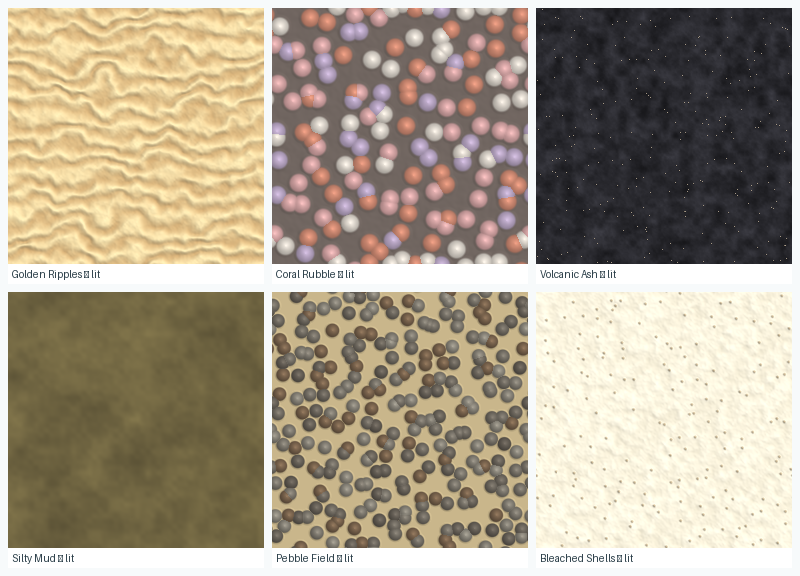
Figure 19 — The six generated sea-floor styles, produced by a Python port of the
baking code and shaded with a normal-mapped diffuse approximating Custom/UnderwaterSand.
Reading order: Golden Ripples, Coral Rubble, Volcanic Ash, Silty Mud, Pebble Field, Bleached Shells.
Golden Ripples and Silty Mud read convincingly; Coral Rubble and Pebble Field read as spheres rather
than broken clasts, because the same Worley F1 term drives both colour and height and so produces
dome-shaped normals; Volcanic Ash is dark enough (albedo 0.07–0.24) that the medium's absorption will
take it close to black. A 2 × 2 repeat confirmed the tileable-by-construction property with no visible
seam.
Seeded caustics
ApplyCaustics is a small but nice idea: caustic scale, speed, chromatic split and colour are
jittered from the environment's own seed and surface style, so two environments that share a sea floor
still do not share a caustic pattern. It has no UI at all — the variation is derived from data the user
already controls.
Water presets and the pattern modes
WaterStyles.Apply writes nine wave and pattern parameters plus a lifted version of the
profile's water colour, then jitters pattern scale, pattern speed and wave speed from the seed for the
same reason. Its _PatternStyle selects among three field functions in the shader:
Mode
Function
Used by
0
Caustic interference — the 3-iteration distortion field of §8.2
Calm Lagoon, Gentle Swell, Choppy Sea
1
Ripple web — voronoi F2−F1 with drifting cell centres, thresholded to thin undulating lines
Glassy Ripples
2
Directional streaks — anisotropic value noise stretched along the shared surge direction and scrolled
Drifting Current
Modes 1 and 2 reuse UwHash21 and UwValueNoise from the shared include rather
than introducing new noise, so the water stays consistent with the rest of the medium. Mode 1 rescales
its input internally: _PatternScale is tuned for the caustic field, where one unit is a fine
filament, and a voronoi cell at that scale would be sub-metre and read as noise rather than as ripples.
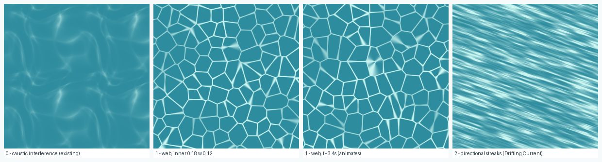
Figure 20 — The three water pattern modes over 40 m of surface. Left: mode 0, the
existing caustic interference field. Middle two: mode 1 at two time samples, showing that the web
undulates as the voronoi centres drift. Right: mode 2, streaks stretched along the surge direction.
These were rendered from a port of the intended HLSL before it was written, which is how the
mode-1 scale problem was caught: at the preset _PatternScale a voronoi cell is sub-metre,
and the pattern read as dust rather than ripples until the internal rescale was added.
Application: clones, never the shared asset
Both classes write directly into the material handed to them, and the materials involved
(UnderwaterSand.mat, StylizedWater.mat) are shared project assets. Mutating
them in the Editor would persist the change into the asset file, so every environment loaded afterwards
would inherit the previous one's appearance. EnvironmentLoader.ApplySurfaceStyles therefore
clones first:
Three ordering and lifetime constraints apply, and all three are load-bearing:
Before EndlessTerrain.Initialize() — chunks read
MapGenerator.terrainMaterial as they are constructed, so a chunk built before the
swap would keep the unstyled material for its lifetime.
Before WaterSurface.Rebuild() — Rebuild assigns
waterMaterial to the renderer.
Destroyed in OnDestroy — a Material created with
new is not collected automatically and would leak one instance per environment
load.
Index 0 is handled by skipping the clone entirely rather than by cloning and applying nothing. That
distinction matters for backward compatibility: an untouched scene material is the one case that must be
bit-for-bit identical to the previous behaviour, and every profile saved before these fields existed
deserializes to 0.
Where the guardrails come from. The two indices are clamped in EnvironmentBounds
against TerrainTextureStyles.Names.Length and WaterStyles.Names.Length — the
tables themselves, not copied constants — so adding a style widens the valid range with no other change,
and a hand-edited JSON file cannot index out of bounds. For the same reason
SimpleEnvironmentSettings.SeafloorSurfaces and WaterMovementsare those
arrays by reference rather than duplicates of them, which makes it impossible for the dropdown labels to
drift out of alignment with the styles they select.
250 linesMAINstaticdocumented in WORLD_CONTEXT_API.md
Converts the live scene into a structured snapshot and a natural-language description. Not part of the
generation pipeline, but directly relevant to the application's text-to-speech accessibility and
assessment features — this is the seam through which a narrator, a tutor or a quiz generator learns what
the learner is actually looking at.
Four data structures, all [Serializable] so JsonUtility can emit them:
Structure
Fields
PlayerState
depth below the surface, heading in degrees and as a compass point, world position
EnvironmentData
estimated biome, depth, distance to seabed, water temperature, visibility, light level, water colour hint
CreatureInfo
name, distance, relative direction, vertical position
PropInfo
name, category (coral / seaweed / rock / feature), distance, direction
The derivations are deliberately simple heuristics over live scene state rather than authored metadata:
Depth — waterLevel − camera.y, where waterLevel is read from
UnderwaterEnvironment, falling back to WaterSurface, then to a constant.
One source of truth, three fallbacks.
Seabed distance — a single downward Physics.Raycast up to 200 m.
Biome estimate — banded on depth and seabed proximity: close to the seabed (< 2 m),
sunlit shallows (< 3 m), reef zone (< 8 m), open midwater (< 20 m),
else deep seabed.
Relative direction — signed angle between camera forward and the target, bucketed into
ahead / ahead-left / left / behind-left / behind and mirrors.
Vertical position is above you / same depth / below you at a 1 m threshold.
Discovery — by tag (Actor for creatures, Obstacle for props),
wrapped in try/catch because an undefined tag throws. Results are sorted by distance and truncated
to 12 creatures and 10 props, so the description length is bounded.
BuildSummary composes a spoken-language sentence:
"You are about 6.4m deep in the reef zone, 1.8m above the seabed.
Water is ~23.4°C, dim, visibility ~22m. 3 creature(s) nearby: a Octopus
ahead-left (4.2m, same depth), a Shark behind (11.7m, above you), ...
5 nearby feature(s) (corals/seaweed/rocks)."
Describe() also returns an empty string when the scene is not an ocean scene and no
creatures are in range, so a caller can use it as a "nothing worth saying" signal rather than narrating
emptiness. Names are cleaned of Unity's (Clone) suffix and of parenthetical decorations
before being spoken.
One defect found while reading.EnvironmentData.waterTemperatureC is declared and is
used by BuildSummary ("Water is ~{e.waterTemperatureC}°C"), and a helper
EstimateTemp(depth) = clamp(26 − depth·0.4, 4, 30) exists — but
GetEnvironment() never assigns the field, so every summary reports
0 °C. The fix is one line in the EnvironmentData initialiser
(waterTemperatureC = R(EstimateTemp(depth))). Worth fixing before any demo that uses spoken
narration, and worth mentioning here because a paper claiming TTS support should not ship a summary that
tells learners the tropical reef is at freezing point.
11 Per-File Reference
Entry points, dependencies and the single most important thing to know about each file. Ordered by
pipeline stage.
11.1 Generation
File
Entry point
Depends on / notable
Noise.cs
GenerateNoiseMap
Nothing. Coordinate grouping is the seam fix; Local mode must never be used when streaming.
TerrainShaper.cs
Generate, Settings
Nothing. Clamp01 before the ridge fold prevents NaN chunks.
BiomeStyles.cs
BuildHeightCurve, BuildShaper
EnvironmentProfile. Curves are code, not assets, and monotonic by construction.
MeshGenerator.cs
GenerateTerrainMesh; MeshData
Copies AnimationCurve keys for thread safety. Owns the skirt and border-normal logic.
MapData.cs
MapData, TerrainType
Readonly struct. No colour map at runtime — colour is entirely shader-side.
11.2 Streaming
File
Entry point
Depends on / notable
MapGenerator.cs
RequestMapData, RequestMeshData, ApplyProfile
Noise, TerrainShaper, MeshGenerator, BiomeStyles. Queues are drained fully each frame with no budget — first place to look for hitches.
Follows the viewer; world-space wave phase keeps waves still.
MarineSnow.cs
ApplySettings
Static mesh; all motion in the vertex shader. HideFlags.DontSave.
UnderwaterCommon.hlsl
included by all shaders
Changing UnderwaterBackground requires matching the skybox shader.
8 × *.shader
—
All hand-written URP HLSL, SRP-batcher compatible; vertex-animated shaders duplicate motion into DepthOnly.
11.5 Configuration
File
Entry point
Depends on / notable
SimpleEnvironmentSettings.cs
Clamp, label arrays
The complete UI surface. Labels live with the data.
SimpleEnvironmentMapper.cs
Apply(profile)
The only bridge. Ends by calling Bounds.Clamp.
EnvironmentProfile.cs
Clone
New fields must default to values reproducing the old look.
EnvironmentBounds.cs
Clamp, Default, Range
Ranges are shared with the UI. Invariants re-derived, never trusted.
EnvironmentLoader.cs
Start
Order matters; streaming last.
EnvironmentRepository.cs
Save, Load, ListUser, Delete
Clamps both directions; tolerant of corrupt files.
BuiltInProfiles.cs
All()
Three biomes as code; each clamped on construction.
LifePackLibrary.cs
Load, GetPack, PackNames
Cached including failure. ShallowClone protects the asset.
EnvironmentSession.cs
Selected, EditRequestId
Static handoff across scene loads.
UI/EnvironmentEditorUI.cs
Open(existing, onDone)
Re-maps and re-clamps on every change.
UI/StartScreenUI.cs
Start
The builder scene is only the form.
CustomEnvEntry.cs
button handler
Addressable scene load.
12 Performance Design and the Measurement Gap
12.1 Where the budget was spent by design
The subsystem contains a coherent set of decisions all pointing at the same constraint — a mid-range
phone running an AR camera feed, plane tracking and the rest of the application at the same time. They are
worth tabulating because collectively they are the engineering argument, even before anything is measured.
Decision
Alternative avoided
Saving
Height field + discrete 3D features
Voxels / marching cubes / SDF
Generation stays a 2D array of pure arithmetic; overhangs cost a handful of shared meshes
Generation on the ThreadPool
Main-thread generation, or a thread per chunk
Frame time decoupled from generation; bounded thread count
Colliders only at LOD 0
Colliders on every visible chunk
Collider bakes scale with the innermost ring, not with view distance
Collider created once, then toggled
Add/remove per LOD change
One physics bake per chunk lifetime
Skirts
LOD edge stitching
~12% vertices at LOD 0; no per-LOD-pair geometry or code
Shared mesh variants (≤ 8/rule)
Unique mesh per instance
Mesh memory O(rules × variants), independent of distance travelled
Merged talus per rule per chunk
One object per fragment
One draw call per rubble field instead of dozens
Textureless props, baked vertex AO
Textures + real-time shadows / probes
Zero texture memory for rock and life; cave lighting at no runtime cost
Shadows off on props by default
Shadow casting per prop
No extra shadow-pass draw calls for hundreds of small objects
Static snow mesh, vertex-shader motion
CPU particle system
One draw call, no per-frame CPU or buffer upload
Derived camera far plane
Fixed large far plane
Nothing rasterised that the medium has already hidden
Recomputation from a spatial hash
Persisting visited chunks
O(visible) memory; no save file, no serialization cost
Allocation and hashing removed from per-frame and per-prop paths
12.2 What is not known
There is no measured performance data in this repository. No frame times, no memory traces, no
chunk-generation timings, no draw-call counts, no device matrix, and no evidence for any specific
frame-rate target. Every entry in the table above is a reasoned saving, not a demonstrated one.
Several are also plausibly wrong in the sense of being unnecessary or mis-sized — for example, the
un-budgeted queue drain in §5.1 may or may not cause visible hitches, and the LOD thresholds were chosen
by eye.
Six experiments would close the gap. All are cheap, and the first two directly substantiate the report's
central claims.
#
Experiment
Method
Claim it tests
E1
Memory flatness
Scripted swim along a straight path for 10 minutes; sample resident memory, live
GameObject count and mesh count every 5 s; plot against distance travelled.
C4. A flat line is the proof that recomputation replaces persistence. A rising line
falsifies it and localises a leak.
E2
Determinism
Populate a chunk; hash every spawned transform (position, rotation, scale) into a digest; leave
until culled; return; re-hash; assert equality. Repeat across all decorator rules and both
scatterers.
C4. Also a genuine regression test worth committing — determinism is easy to break
accidentally by introducing UnityEngine.Random or frame-dependent state.
E3
Frame time by preset
Same scripted path at Near / Medium / Far on 2–3 real devices spanning the target range; report
median and 95th-percentile frame time, plus a histogram.
That the three presets are meaningfully different and all viable — the premise of the
Exploration Area control.
E4
Generation cost breakdown
Stopwatch around height-field generation and each LOD mesh build, off-thread;
report distributions for Classic and Canyons.
That Canyons' three extra operators are affordable, and whether meshing or noise dominates.
E5
Population cost and draw calls
Profiler capture of a chunk-population spike: instantiation count, raycast count, resulting draw
calls with and without talus merging and material unification.
The merging and unification savings in §7.3 and §7.2.
E6
Authoring usability
N teachers or students, no training: time to first satisfying environment, SUS, and — the
decisive measure — whether any produced configuration violates I-1…I-6 or otherwise breaks
(the invariants predict zero).
C1. This is the experiment that makes it an education paper rather than a graphics
paper.
E1, E2 and E4 can be automated inside the project and re-run in CI. E3 and E5 need devices. E6 needs
ethics approval and participants, and should be scoped early because it has the longest lead time.
13 Known Gaps and Verification Status
13.1 SurfaceStyles.cs — now wired
An earlier revision of this report listed SurfaceStyles.cs as dead code: untracked in git,
referenced by nothing, and setting a material property (_PatternStyle) that the water shader
did not declare. It has since been wired in and is described in §9.7. Six files changed:
File
Change
StylizedWaterSurface.shader
Added the missing _PatternStyle property and implemented pattern modes 1 (voronoi ripple web) and 2 (directional streaks), reusing the shared include's hash and value noise
EnvironmentProfile.cs
Group 3c: terrainTextureStyle, waterStyle, both defaulting to 0
SimpleEnvironmentSettings.cs
User choices seafloorSurface and waterMovement; label arrays aliased to the style tables
SimpleEnvironmentMapper.cs
ApplySurfaces — pass-through of the two indices
EnvironmentBounds.cs
Clamps both indices against the style tables' lengths
EnvironmentLoader.cs
Step 2c: applies each style to a material clone, before Rebuild() and Initialize(); clones destroyed in OnDestroy
UI/EnvironmentEditorUI.cs
Two dropdowns, under the existing Seafloor and Water headers
The user-facing surface is therefore 10 controls rather than eight, and the invariant story of §9.3
is unchanged: both new fields are validated indices, and index 0 of each is a strict no-op, so every
environment saved before the change renders exactly as it did.
What has and has not been verified.
Check
Result
Method
C# compiles
verified
All 34 subsystem files plus the full Assembly-CSharp source set compiled with Unity's bundled Roslyn: zero errors and zero warnings inside ProceduralTerrain. The harness was itself validated by injecting a deliberate type error and confirming it was caught.
Wiring logic
verified
A standalone harness exercised the real compiled code: user choice reaches the profile, out-of-range indices clamp, Clamp is idempotent, Clone deep-copies, and all 42 style combinations survive a full Apply+Clamp pass.
Baked textures
seen
The baking code was ported to Python and all six generated styles were rendered and inspected, including a 2 × 2 repeat to confirm the tileable-by-construction claim (no seam).
Water pattern modes
seen
Modes 1 and 2 were ported and rendered at two time samples before being written as HLSL, which is how the mode-1 scale problem noted in §9.7 was found and fixed.
HLSL compiles
NOT verified
Shader compilation requires the Unity Editor, which was not run. Braces and parentheses balance, every function and global used is declared in UnderwaterCommon.hlsl or URP Core, and the call site type-checks by inspection — but this needs one Editor import to confirm. It is the single outstanding risk in this change, and it affects the water surface for all styles including 0.
In-engine appearance
NOT verified
No style has been seen rendering inside the app on real streamed terrain.
Two judgements on the styles themselves, from the offline renders: Coral Rubble and
Pebble Field read as spheres rather than broken clasts, because the same Worley F1 term drives both
colour and height and produces dome-shaped normals; and Volcanic Ash is very dark
(albedo 0.07–0.24) and will go nearly black once the medium's absorption is applied. All three are usable
but none is as convincing as Golden Ripples or Silty Mud.
13.2 Other findings
Item
Severity
Detail and suggested action
New HLSL not yet compiled
Needs one Editor run
The two new water pattern modes and the _PatternStyle property have not been
through a shader compile. Open the project once and check the Console before relying on the
water surface. (§13.1)
Water temperature always 0 °C
Low, user-visible
World.GetEnvironment() never assigns waterTemperatureC although
EstimateTemp exists and BuildSummary reads it. One-line fix; do it
before any spoken-narration demo. (§10)
Un-budgeted queue drain
Unknown
MapGenerator.Update drains both result queues to empty each frame. Add a per-frame
cap only if E3/E4 shows hitches — do not pre-optimise. (§5.1)
Callbacks invoked under the queue lock
Low, latent
Works because the two queues are always acquired in a consistent order, but a future refactor
could deadlock. Consider draining into a local buffer before invoking. (§5.1)
Static state in EndlessTerrain
Design
MaxViewDst, ViewerPosition, _mapGenerator,
_decorators and _chunksVisibleLastUpdate are static, so two
simultaneous terrain instances would interfere. Fine today (one ocean at a time); worth noting
if multiplayer or split-screen is ever attempted. (§11.2)
hillshade() duplication
Report-only
Not a project issue — an unused helper in the figure-generation script for this report.
No automated tests
Medium
The seam property, the determinism property and the invariants are all mechanically checkable.
E2 (§12.2) is the natural first test; a second could assert that
Clamp is idempotent and that random profiles always satisfy I-1…I-6.
14 Mapping This Report onto the Paper
The target format is the VGTC conference style already in use for the Cephalopod AR demo submission. There
are two coherent options, and they are not mutually exclusive — the first can be done now, the second
after §12's measurements.
14.1 Option A — a subsection in the existing demo paper
The current draft's §2.1 covers terrain in a single clause. A half-column to one-column subsection titled
Procedural Environment Generation, placed between the AR Foundation and behavioural-simulation
paragraphs, would carry four sentences of substance:
An infinite seabed is streamed in 8 m chunks around the AR anchor, generated on worker threads from
a seeded fractal height field with a coordinate scheme that makes shared chunk borders
bit-identical.
Because a height field cannot represent caves, overhangs, arches and grottos are separate shared
meshes seated on it, generated once per variant and instanced, with cave lighting baked into vertex
colour.
All surfaces render through one water medium with per-channel absorption, whose opacity distance is
constrained below the streaming reach so the world has no visible edge.
Educators author new biomes through ten choices; a constraint layer derives ~50 parameters and
enforces six invariants, so no reachable configuration produces a broken environment.
One figure. The strongest candidate is a two-panel version of Figure 3 (Classic vs Canyons) or, if space
allows, Figure 14's rock ablation, which is the most visually self-explanatory result here.
14.2 Option B — a standalone full paper
Suggested framing, which puts the two genuinely novel contributions in the title rather than the noise:
Constrained Procedural Authoring for Mobile AR Science Education:
An Infinite Underwater World Non-Experts Cannot Break
§
Section
Source in this report
1
Introduction — many environments needed, teachers cannot author them, PCG tools expose dozens of knobs
§1.1, §9 opening
2
Related work — fractal terrain, chunked LOD streaming, PCG for education, AR in science education
Existing citations (akcayir2017, permana2024, merchant2014, sicat2018dxr) plus terrain-synthesis and spatial-hashing references
3
System overview
§2, Figure 1
4
Seam-free streaming height field
§3.1, §4.2, §4.3, §5, Figures 2, 8, 9, 10
5
Beyond the height field: discrete 3D features
§7.4, Figures 14, 15
6
Deterministic ecological population
§7.1–7.3, Figure 13
7
A single water medium
§8, Figures 16, 17
8
Constrained authoring
§9, Figure 18
9
Evaluation
Does not exist yet — §12.2 specifies E1–E6
10
Discussion and limitations
§13, plus the honest scope of the absorption model (§8.2)
14.3 What to claim, and what not to
Claim as a contribution
Do not claim as novel
The constrained two-layer authoring model with enforced cross-field invariants (C1)
Fractal Brownian motion, Perlin noise, ridged noise, domain warping — all established; cite them
Hybrid height field + shared discrete 3D features under a mobile budget, with baked cave lighting (C2)
Chunked terrain streaming with distance-based LOD — standard practice
Coupling the rendering medium to the streaming reach as an invariant (C3)
Vogel / sunflower packing and the golden angle — known from phyllotaxis literature
Recomputation-instead-of-persistence as an educational reproducibility property (C4)
Spatial hashing for deterministic placement — cite Teschner et al.
The RockStyle combination of fracture projection, asymmetric bedding lips and two-scale detail, and its ablation
Per-channel attenuation as physics — the model here is coarse and inferred from an artist-chosen colour, not measured; describe it as perceptually motivated
Three things to remove or rewrite before submission.
The existing draft's sentence "Preliminary deployment in educational settings demonstrates
significant improvements in student engagement and knowledge retention compared to traditional
marine biology instruction methods" is not supported by anything in this repository. Either
run a study or delete the claim; in a full paper it is a rejection risk on its own.
Any claim that the sea-floor texture styles or water presets have been seen working in the app —
they are wired and their generated output has been inspected offline, but nothing has yet been
confirmed rendering in-engine (§13.1).
Any performance figure that has not been measured. Report the design decisions of §12.1 as design
decisions, and give measurements only from E1–E6.
14.4 Figure inventory
Every figure in this report is reusable in the paper. The PNG and SVG files, and the Python that generated them, are in docs/procedural-terrain-report/ — SVG figures can be included directly in LaTeX via \includegraphics after conversion to PDF, or re-exported at any resolution from figs.py.
Fig
Subject
Type
Best used for
1
Six-stage architecture
SVG diagram
System overview section
2
Chunk life cycle across threads
SVG diagram
Streaming / threading
3
Classic vs Canyons, 3D
Rendered PNG
Teaser or terrain section; the demo-paper candidate
4
Operator ablation, 4 panels
Rendered PNG
Terrain synthesis; shows what each operator contributes
5, 6
Terrace gain and ridge fold
SVG plot
Method detail; compact and precise
7
Height remap curves
SVG plot
Method detail
8
Border ring and shared normals
SVG diagram
The seam argument — publish it, nobody documents this
9
LOD skirts, cross-section
SVG diagram
Meshing
10
Chunk grid, LOD rings, presets
SVG diagram
Streaming
11
Spawn/despawn hysteresis
SVG diagram
Population
12
AR placement flow
SVG flowchart
AR integration
13
Vogel mound packing
SVG diagram
Population method
14
RockStyle ablation, 4 panels
Rendered PNG
Strongest single figure — carries §7.4 alone
15
Grotto construction
SVG diagram
3D features
16
Per-channel transmittance
SVG plot
Medium model
17
Distance composition and invariants
SVG diagram
The C3 argument
18
Configuration pipeline
SVG diagram
The C1 argument
Still missing, and worth capturing on a device: an in-situ photograph of the ocean anchored to a real
classroom floor, and a screenshot of the ten-control authoring form beside the environments it produced.
Both are straightforward to obtain and both would strengthen an education-venue submission considerably.
Provenance. Every algorithm, constant and code excerpt in this report was read
directly from Assets/ProceduralTerrain/. Figures 3, 4 and 14 were rendered by a Python port
of Noise.cs, TerrainShaper.cs, BiomeStyles.cs and
ProceduralMeshLibrary.RockStyle; Figures 5, 6, 7, 13 and 16 were plotted from the shipped
formulae (see docs/procedural-terrain-report/figs.py); the remaining figures are hand-authored diagrams of documented behaviour. The only substitution
is the Perlin permutation table, so generated layouts differ from the application's while every structural
property is preserved. No performance claim in this document is based on measurement.